데이터 시각화란?
들어가며
대화를 할 때, 우리는 항상 더 나은 의사소통을 하기 위해 노력합니다.
그렇다면 데이터를 쓸 때, 내가 가진 데이터로 더 나은 의사소통을 하기 위한 방법에는 어떤 것들이 있을까요?
저와 같이 데이터를 본격적으로 다루는 부서에서 일하지 않더라도 이제는 많은 영역에서 데이터를 사용하고 있습니다.
데이터의 크기, 깊이와는 무관하게 공통적으로 중요시 여기는 것이 있다면 그건 아마도 ‘데이터 시각화’일 것입니다.
이번 포스팅에서는 데이터를 통해 내가 말하고자 하는 바를 더 명확하게 표현할 수 있도록 도와주는 도구이자 전략인
‘데이터 시각화’에 대해 알아보겠습니다.
데이터 시각화를 하는 이유?
데이터 시각화가 필요한 이유는 뭘까요? 사실 이유는 간단합니다. 우리가 텍스트 가득한 책보다 그림책을 더 읽기 쉽게 느끼듯이
데이터도 숫자만 나열하는 것 보다 차트를 통해 시각화하는 것이 원활한 커뮤니케이션 측면에서 훨씬 유리하기 때문입니다.
언제, 어떤 차트를 써야 좋은 시각화일까?
목적에 따라 추천되는 차트의 유형을 간단히 정리해보자면 이렇습니다.
- 비교의 목적 : 막대, 선, 영역 차트 등
- 분포 확인의 목적 : 산점도, 히스토그램 등
- 데이터간 관계 확인의 목적 : 산점도, 네트워크, 버블 차트 등
- 전체에서 구성 요소를 확인하는 목적 : 트리맵, 파이 차트 등
만약 데이터를 분석하는데 이미 익숙한 분들이라면 더 자세하게 요약된 자료가 존재하니 참고해도 좋겠습니다.
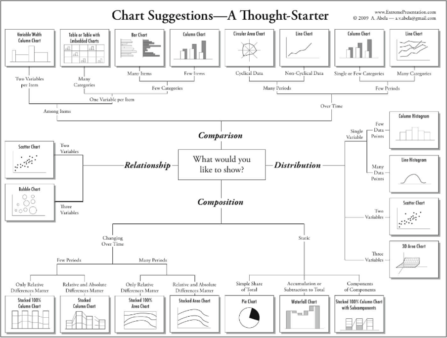
Dr.Andrew Ablela가 고안한 ‘비교’, ‘관계’, ‘분포’, ‘구성’ 기준에 따른 차트 선택 방법
많은 사람들에게 익숙한 막대, 라인 차트에서 조금은 생소할 수 있는 상자그림, 버블, 네트워크 차트를 비롯하여 데이터 시각화의 한계를 뛰어넘기 위한 스몰 멀티플즈 기법까지 시각화의 종류와 기법은 너무나 다양합니다.
물론 복잡한 시각화 기법이 굳이 필요하지 않다면, 기본적인 차트의 유형과 그 사용법만 알아도 충분히 더 나은 스토리텔링이 가능합니다. 만약 이미 기본적인 시각화의 기술을 익힌 상태에서 더 다양한 방식의 스토리텔링을 고민하고 있다면 추가적인 차트의 유형과 기법의 습득을 통해 한 단계 더 나아갈 수도 있습니다.
참고로 각 차트의 유형별 사용법과 활용 사례는 추후 업로드될 포스팅에서 다룰 예정입니다.
앞서 시각화의 필요성과 목적에 맞는 차트 선택에 대해 간단히 소개드렸는데요, 만약 목적에 맞는 시각화 유형을 선택했다면 모두 좋은 시각화가 되는 것일까요?
제대로된 시각화를 하기 위해서는...
잘못된 시각화는 오히려 데이터의 왜곡을 불러오고 해석의 방향성을 전혀 다르게 끌어낼 수도 있습니다. 이러한 오사용을 방지하기 위해서는 일부 데이터 분석 지식도 필요하지만 기본적인 주의사항들만 알고있어도 큰 문제는 피할 수 있습니다.
차트의 유형과 무관하게 공통적으로 유의하면 좋을 주의 사항들을 몇 가지 사례를 통해 살펴보겠습니다.
- Y 축 기준 값 확인하기
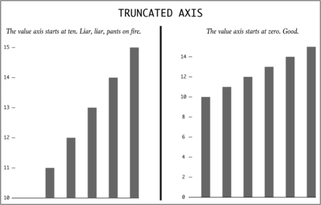
평범해 보이는 막대 차트입니다. 두 차트는 어떤 차이가 있을까요? 바로 Y 축의 기준 값이 어디서 시작하느냐입니다. 이 기준이 중요한 이유는, 좌측과 같이 축의 일부가 잘려진 상태로 값을 보여주게 되면 우측과 같이 0을 기준으로 그려진 차트보다 더 큰 변화가 이루어지고 있는 것 처럼 보이기 때문입니다. 만약 내가 주장하려는 내용이 ‘급격한 변화’라면 좌측의 차트가 더 매력적이게 느껴지겠지만 이는 차이를 왜곡해서 보여주는 잘못된 차트라고 할 수 있습니다.
특히 이러한 왜곡 사례는 하나의 차트가 아닌 여러 차트를 비교하여 동시에 보여줄 때 더 문제가 됩니다. 좌측과 우측의 차트가 각각 다른 카테고리의 상태를 보여주는 차트라면 좌측이 우측보다 더 큰 변화를 가지고 있다고 해석될 수 있기 때문입니다.
- 이중 축 사용시 해석에 유의하기
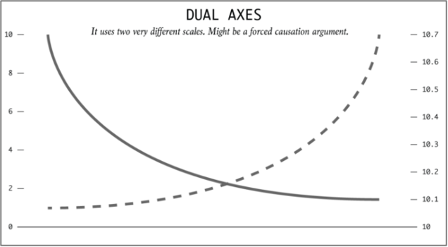
하나의 차트에서 비교의 편의를 위해 이중축(보조축)을 사용해야하는 경우, 위의 케이스와 유사하게 축 단위 설정에 주의하여 해석해야 합니다. 이중축의 사용 자체는 경우에 따라 필요할 수 있으나 해석에 유의가 필요하다는 의미입니다. 특히 둘 이상의 지표가 표현되므로 하나의 지표의 증감이 다른 지표의 증감에 영향을 주는지 등의 해석을 하게 될 경우에는 축의 범위와 단위를 꼭 고려해야 합니다.
- 절대 값과 상대 값의 차이 이해하기
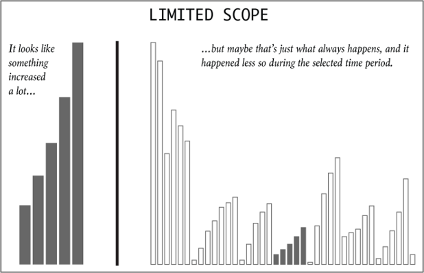
무언가를 시계열 별로, 혹은 항목별로 비교하고자 할 때 특정 항목의 절대 값만을 살펴보는경우도 있지만 전체와 같이 놓고 상대적인 값을 보아야할 때도 있습니다. 위 차트의 경우 좌측만을 놓고 보면 막대간 차이가 큰 것 처럼 보이지만 다른 요소들과 함께 놓고 비교했을 때는 그 차이가 크지 않은 것 처럼 보입니다. 때에 따라 절대 값만 봐도 되는지 혹은 전체와의 비교를 통해 상대적인 값도 함께 봐야 하는지에 대한 고려가 필요합니다. 만약 좌측과 같이 절대 값만을 두고 ‘차이가 크다’ 라고 해석하기에는 부족할 수 있습니다.
앞서 소개한 몇 가지 케이스 외에도 시각화를 할 때 고려해야 할 부분들이 많습니다. 차트는 데이터를 어떻게 해석할 지 보여주는 역할을 하기 때문입니다. 차트 활용에 필요한 주의사항이기도 하지만 데이터를 분석하는데 필요한 주의사항으로도 볼 수 있습니다.
물론 모든 요소를 고려할 수 있다면 좋겠지만 완벽한 시각화를 해야한다는 의미는 아닙니다. 간단한 차트를 그릴 때에도 나의 의도에 영향을 받아 일부 과장되었거나 오해의 소지가 있지는 않을지 한번 더 고민해보는 자세를 가지는 것이 중요하고 그것이 잘못된 시각화를 피할 수 있는 가장 좋은 방법이라고 생각합니다.
다음 포스팅에서는 시각화의 목적을 비교, 분포, 구성, 관계로 분류하고 각 카테고리별 사용할 수 있는 다양한 차트 유형과 활용법, 주의사항들을 몇 차례에 나누어 자세히 살펴보겠습니다.
라인, 막대 차트
들어가며
많은 차트 유형 중에서 내가 원하는 차트를 선택하기 위해서는 먼저 차트 유형별 적합한 사용 목적에 대해 이해하는 것이 필요합니다. 이번 포스팅을 포함하여 이후의 시각화 시리즈에서는 다양한 차트들을 어떤 목적으로 사용할 수 있는지 간단한 예시들을 통해 살펴보려고 합니다.
라인 차트 활용하기
라인 차트는 일반적으로 일정 기간 동안의 추세를 보고자할 때 가장 적합합니다. 아래는 이러한 시계열 성격을 가지는 ‘월별 판매 수량’ 지표를 자주 사용되는 세 개의 라인 차트로 표현해본 예시입니다.
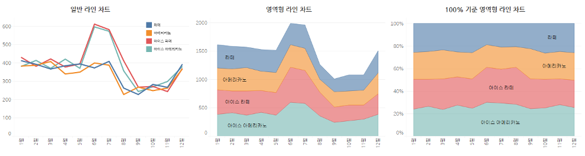
월별 판매 수량을 나타낸 3개의 라인 차트
첫 번째 차트는 범주를 추가한 일반적인 라인 차트입니다. 상품의 종류를 범주로 두어 4개의 상품 판매 추이를 비교하는 목적으로 사용합니다. 그렇다면 비교 뿐만 아니라 시간에 따른 변화의 규모를 강조하고 싶다면 어떻게 바꿔볼 수 있을까요?
라인 차트와 영역 차트의 결합된 형태인 ‘영역형 라인 차트’를 사용해볼 수 있습니다. 전체에 대한 범주별 추이를 비교하면서 각각의 범주가 누적된 전체에 대해 어떻게 공헌하고 있는지 보여주고 싶을 때 유용합니다. 이 경우, 세로축은 판매 수량의 누적 값이므로 모든 범주가 누적된 가장 위의 라인은 전체 수량 합계를 나타냅니다. 절대적이고 상대적인 것을 함께 볼 수 있는 것이죠.
그러나 굳이 전체 판매 수량까지 확인할 필요는 없고, 각 범주별 백분위 수준을 파악하는 것이 목적이라면 세 번째 차트인 ‘100% 기준 영역형 라인 차트’를 사용하는 것이 더 효율적일 수 있습니다. 상대적인 부분을 강조하여 보고싶은 경우인데, 세로축이 백분위를 나타내기 때문에 각각의 비중이 더 직관적으로 표현되기 때문입니다.
* 영역을 중복하여 나타내는 차트 유형도 있으나 일반적으로 잘 사용되지 않아 제외하였으며, 본 시각화 시리즈에서는 주로 사용되는 차트를 위주로 구성하였음을 참고 부탁드립니다.
→ 영역형 차트를 사용하지 않아야 하는 경우?
데이터의 구성을 상대적으로 비교하고자 할 때 영역형 차트를 사용할 것을 추천했지만 사실 더 많은 고려 사항이 있습니다.
- 영역형 차트는 전체의 합이 의미를 가질 때 사용합니다.
예를 들어, 위 예시 이미지의 차트는 각 ‘범주별 판매 수량’의 합이 전체 수량의 합으로 의미를 가지기 때문에 문제가 없지만 만약 ‘회사별 주가 변동’처럼 전체의 합이 어떤 의미도 없는 경우는 적합하지 않습니다.
- 각 범주의 값이 차이가 작다면 일반 라인 차트가 더 적절할 수 있습니다.
왜곡 방지를 위해 세로축의 시작은 늘 0이 되어야 하지만, 값의 차이가 미미해 축의 시작점을 다르게 하여 차이를 표시해야 하는 특정한 경우가 있을 수 있습니다. 이런 경우, 영역형 차트는 축의 조절이 어려움으로 일반 라인 차트가 더 적합할 수 있습니다.
- 시간이 지남에 따라 각 범주가 하나의 값만 가지게 되거나 가로축에 표시되는 날짜가 적은 경우에는 일반 라인, 막대 차트가 더 적절할 수 있습니다.
차트를 선택할 때 데이터의 유형, 차트 사용의 목적이 가장 큰 고려 사항이기는 하지만 때에 따라 데이터의 집계 수준, 보고서에서 강조하고자 하는 부분 등과 같이 여러 가지 요소를 추가적으로 살펴보는 것이 필요합니다.
막대 차트 활용하기
라인 차트 만큼이나 가장 대중적으로 사용되는 차트인 막대 차트는 라인 차트처럼 시간에 따른 변화를 비교하고 싶을 때도 사용되지만 범주별 값의 크기를 비교하고 싶은 경우에 주로 사용됩니다. ‘월별 판매 수량’ 지표를 이번엔 막대 차트의 여러가지 형태로 나타내볼까요?
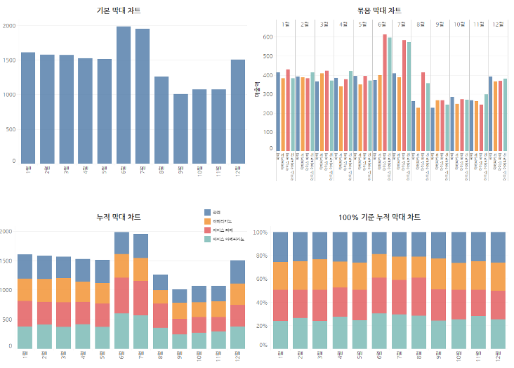
월별 판매 수량을 나타낸 4개의 막대 차트
첫 번째 차트는 단일 범주에 대해 일정 기간 동안의 많고 적음을 비교할 수 있는 가장 기본적인 막대 차트입니다. 여기에 상품 범주를 추가하여 나타낸 것이 나머지 세 개의 차트인데요, 사용 목적에 따라 적합한 유형을 선택할 수 있습니다.
두 번째 차트인 ‘묶음 막대 차트’는 기본 막대 차트를 나란히 붙여놓은 것과 유사한데, 특히 상위 관점(월 단위)별로 하위 관점(상품 유형)을 절대값을 토대로 비교하고자 할 때 사용합니다. 하지만 조금만 범주가 늘어나도 전달력이 떨어지기 때문에 범주의 수가 2~3개 정도인 경우에만 사용하는게 좋습니다.
차트 이미지 하단의 ‘누적 막대 차트’와 ‘100% 기준 누적 막대 차트’의 특성은 앞서 살펴본 ‘라인 영역 차트’와 ‘100% 기준 영역형 라인 차트’의 특성과 유사합니다. 즉, 전체 판매 수량의 추이도 확인하면서 매출을 구성하는 카테고리별 공헌도도 함께 보고자한다면 ‘누적 막대 차트’를, 각 범주별 비중이 더 중요하다면 백분위를 나타내는 ‘100% 기준 누적 막대차트’를 활용하면 되는 것이죠.
→ 라인 vs 막대 ?
앞서 설명한 내용에 따르면 라인과 막대 차트는 언뜻 유사한 사용성을 보이는데, 명확히 어떤 차이가 있는 걸까요? 정해진 기준이 있는 것은 아니나 (시계열 데이터를 예로 든다면) 보통 긴 기간의 데이터를 사용하면서 흐름을 강조하고 싶다면 라인 차트를, 짧은 기간의 데이터를 사용하면서 범주간 차이를 강조하고 싶다면 막대 차트를 사용하는 것을 추천합니다.
→ 세로 막대 vs 가로 막대 ?
참고로 세로 막대 차트는 가로형으로도 나타낼 수 있습니다. 보고서 상의 공간이나 다른 차트와의 조화 등의 이유로 더 어울리는 것을 선택하면 되지만 가로 막대가 더 유용한 몇 가지 케이스는 아래와 같습니다.
→ 막대 차트 vs 히스토그램 ?
막대 차트와 비슷하게 생겼지만 사용 목적과 표현 방식은 다른 차트가 있습니다. 바로 히스토그램(=도수분포표)입니다. 막대 차트에 비해 상대적으로 덜 친숙하지만, 생김새는 비슷해 히스토그램을 막대 차트의 한 유형으로 보는 경우도 있지만, 두 차트의 사용법을 정리해 본다면 전혀 다른 차트임을 알 수 있습니다.
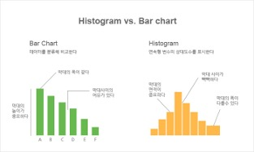
막대 차트와 히스토그램의 차이
간단히 비교하자면 막대 차트는 데이터를 분류(category)하는 데 사용하고 히스토그램(=도수분포표)은 데이터의 분포(distribution)를 표현하는데 사용합니다.
위 이미지를 좀 더 풀어서 이야기해볼까요? 막대 차트는 앞서 설명한대로 범주형 데이터를 비교하는데 주로 사용하므로 가로축은 범주형 데이터를 나타낼 때가 많으며 (시간을 나타낼 때를 제외하면) 막대의 순서, 즉 범주의 순서는 의도에 따라 바뀔 수 있고 막대 간 간격은 일정합니다.
그에 반해 히스토그램은 ‘도수분포표’라는 명칭 대로 연속형 변수의 구간별 상대 도수를 나타냅니다. 따라서 막대 차트와 달리 가로축이 변수, 즉 값에 해당합니다. 또한 연속형 데이터의 특성상 막대의 순서를 임의로 바꿀 수 없으며 모든 막대를 간격 없이 붙여서 표현합니다. 이때 전체 막대의 면적 합은 1이며 각 막대별 간격이 같을 필요는 없습니다. 히스토그램에서는 면적이 가장 중요한 정보이기 때문입니다. 막대의 간격을 얼마로 설정하는 것이 적절한지 애매할 수 있으나 명확한 규칙이 있지는 않습니다.
만약 우리가 특정 유저의 플레이 현황에 대해 표현해보고 싶다고 가정해보겠습니다. 콘텐츠 유형별(PVP, PVE 등) 클리어 횟수를 확인하거나, 구매한 패키지의 가격대 분포를 확인해 볼 수 있을텐데요, 데이터의 특성과 목적을 고려해본다면 전자는 콘텐츠 유형을 범주로하는 막대 차트로, 후자는 건별 구매 금액을 가로축으로하는 히스토그램으로 표현할 수 있을 것입니다.
→ 주의할 점
추가로 막대 차트를 활용할 때 주의할 점이 있습니다. 비교하고자 하는 것(=집계 값, 막대의 크기)이 각 집단의 평균과 같이 요약된 형태일 경우, 막대 차트는 집단 내 표본의 크기나 분포를 알려주지는 않기 때문에 오해석 될 여지가 있다는 것입니다. 표본의 수가 1인 집단과 100인 집단의 평균을 동일 선상에서 비교할 수 없기 때문입니다. 따라서 이런 위험이 있는 경우, 표본의 크기를 함께 확인할 수 있도록 테이블 혹은 별도 차트를 추가하거나 혹은 (이후 시리즈에서 다룰) 스캐터 플롯, 박스 플롯 등의 차트로 시각화하는 것이 더 적절할 수 있습니다.
이번 포스팅에서는 익숙한 두 차트 유형을 살펴보았습니다. 대부분 이미 알고있던 개념이었겠지만 다시 한번 정리하는 기회가 되었기를 바랍니다.
파이 차트, 산점도 차트, 레이더 차트
들어가며
이번 포스팅에서는 라인과 막대 차트 외에도 유용하게 쓰일 수 있는, 원형과 관련된 몇 가지 차트를 알아보겠습니다.
파이 차트 활용하기
파이 차트는 라인, 막대 차트와 같이 친숙한 차트입니다. 범주별 구성 비율을 원의 중심각과 비례하게 그린 차트로, 전체에 대한 각 범주별 비율을 나타낼 때 사용합니다. 이해하기 직관적이고 간편해 주로 뉴스 등의 미디어에서 자주 활용합니다. 이미 잘 알고있는 차트인 만큼 사용법에 대한 설명보다는 주의사항 몇 가지를 설명드리고자 합니다.
첫 번째로 범주의 개수에 주의해야 합니다. 보통은 범주가 4개 이하일 때 사용하는 것이 좋습니다. 중심각으로 구분된 크기나 컬러를 통해 범주의 규모 파악이 직관적으로 가능해야 하기 때문입니다. 이 때, 크기가 큰 항목부터 순차적으로 배열하여 나타내는 것이 좋습니다. 만약 4개 이하의 범주더라도 항목 간 차이가 미미해 규모 비교가 어려운 케이스라면 파이 차트 보다는 막대 차트를 사용하는 것이 좋습니다.
두 번째로 나타내고자 하는 부분을 강조하여 표현하는 것을 추천합니다. 예를 들어, 범례를 파이 차트 위에 직관적으로 알아볼 수 있도록 나타내고 해석하고자 하는 특정 항목은 다른 컬러 혹은 테두리로 표현하는 것 등입니다.
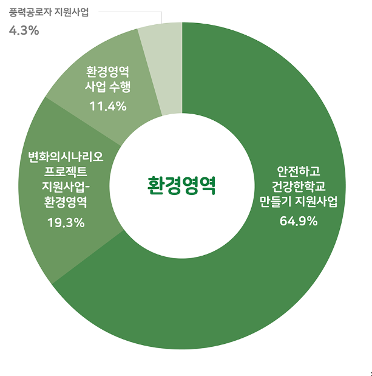
적당한 범주 개수 & 직관적인 범례 표시 & 범주 순차 배열된 도넛형 파이 차트
정해진 규칙이 있는 것은 아니지만 이 두 가지 포인트만 기억해도 파이 차트를 더 효율적으로 사용할 수 있습니다.
산포도 차트 활용하기
산포도 차트(=산점도 차트)는 2개의 서로 다른 변수들이 어떻게 분포되는지 보여줍니다. 다른 유형의 차트에서는 볼 수 없는 변수 간 관계나 경향을 바로 이해할 수 있게 도와주기 때문에 상관관계 확인과 같이 특정한 목적으로 사용할 때가 많습니다.
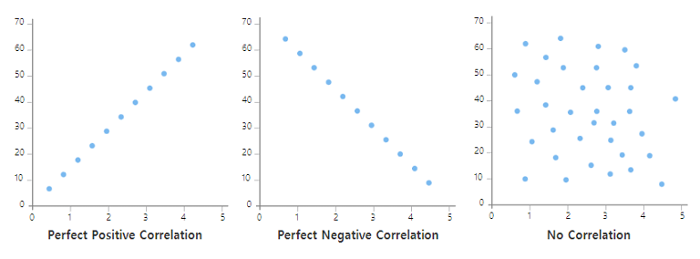
산포도 차트를 통해 나타낸 변수간 상관관계 예시
다만 점 하나가 데이터 하나의 값을 나타내기 때문에 대상이 되는 데이터가 너무 많다면 겹치는 부분이 그만큼 많아질 수 있어 정확한 분포를 확인하기 어렵다는 단점이 있습니다. 밀도가 제대로 보이지 않기 때문입니다. (위 이미지와 같이 간단한 데이터에서는 이슈가 없습니다.)
만약 이런 경우라면 산포도 차트 대신 히트맵으로 바꿔서 표현하는 것도 하나의 방법입니다.
앞서의 예시처럼 보통은 2개의 변수를 사용하지만 색상 혹은 원의 크기를 추가하여 3~4개의 변수를 나타내기도 합니다. 그러한 산포도 차트를 버블 차트라고 합니다.
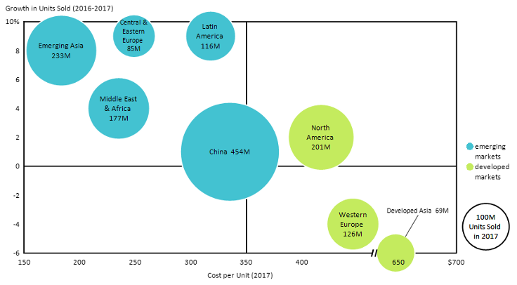
원의 크기와 색깔을 사용한 버블 차트 예시
원의 크기와 색깔이 추가된 버블 차트는 3~4개의 변수를 한번에 비교하도록 설계된 관계형 차트라고 볼 수 있습니다. 앞서 설명한 산포도 차트처럼 가로축과 세로축의 상관 관계 뿐만 아니라 특정 범주간 수준을 비교하는 것도 가능합니다. 위 예시에서는 원의 크기로 판매 단위의 크기를 나타내고 원의 색깔로 마켓 유형을 구분했습니다. 연두색 마켓은 하늘색 마켓에 비해 판매 단위도 작고 비용도 더 높은 편임을 알 수 있습니다. 또 판매 성장 단위와 단위별 비용이 음의 상관 관계를 가지는 변수임도 확인할 수 있습니다.
변수간 관계를 보는 목적 외에도 아래 두 가지의 목적으로 산포도 차트를 활용할 수 있습니다.
방사형 차트 활용하기
방사형 차트(=레이더 차트)는 어떤 측정 목표에 대한 평가 항목이 여러 개일 때 이 항목들의 전체 경향을 나타낼 때 사용합니다.
항목 수에 따라 중심으로부터 일정 간격으로 척도를 재는 칸을 나누어준 뒤, 각 항목의 정량화된 점수에 따라 그 위치에 점을 찍고 이를 이어 항목 간 균형을 한눈에 볼 수 있도록 하는 차트입니다. 가장 대표적인 예시로 학생의 과목별 점수나 스포츠 선수의 능력치를 보여주는 것이 있습니다.
두 학생의 5과목 성적 경향성 비교 레이더 차트 예시
위 예시 이미지를 보면 노란색 학생(Tim)이 하늘색 학생(Lisa)에 비해 학업성취도가 조금 더 균형있게 나타났으며 각자 서로 잘하는 과목이 확연히 차이남을 알 수 있습니다.
이렇듯 방사형 차트는 여러 측정 항목을 비교하기에 편리하고 각 항목 간 비율뿐만 아니라 균형과 경향을 직관적으로 보여줍니다.
다만 정해진 법칙이 있는 것은 아니나, 항목의 개수가 5~6개 정도로 권장되고 (위 예시에서 두 명의 학생을 비교한 것과 같이) 1~3개의 범주가 적합하다는 제한 요소가 있기 때문에 특정한 상황에서만 사용되는 편입니다. 이 요건을 만족한다면 다른 어떤 차트보다도 목적에 맞는 효율적인 시각화가 가능합니다.
그러나 몇 가지 유의 사항이 있습니다.
일각에서는 위와 같은 유의 사항으로 레이더 차트의 사용을 지양하는 경우도 있으나, 특정 상황에 유용하게 사용될 때가 있으니 해석할 때 이를 염두해 적절히 활용하시는 것을 추천합니다.
트리맵, 히트맵
들어가며
오늘은 1~3편에서 소개드린 시각화 방식보다는 생소하지만 알아두면 좋을 차트 유형을 소개해보려고 합니다. 맵(MAP) 형식을 활용한 차트 중 유용하게 사용할 수 있는 트리맵, 히트맵 차트를 살펴보고 실제 보고서에서는 어떻게 활용할 수 있는지 알아보겠습니다.
히트맵 활용하기
히트맵이라는 단어는 생소할 수 있어도 누구나 한번 쯤은 접해보셨을 텐데요. 뉴스에서 날씨를 알려줄 때, 지도 위에 온도를 색으로 표현한 차트가 가장 대표적인 히트맵 유형이기 때문입니다.
히트 맵((heat map)이란 열을 뜻하는 히트(heat)와 지도를 뜻하는 맵(map)을 결합시켜 색상으로 표현할 수 있는 다양한 정보를 일정한 이미지 위에 분포 형태로 보여주는 차트입니다.
정의는 굉장히 단순합니다. 이해를 돕기위해 히트맵의 몇 가지 사용 예시를 살펴볼까요?
- 예시 1. 기상청에서 보여주는 전국 날씨 분포
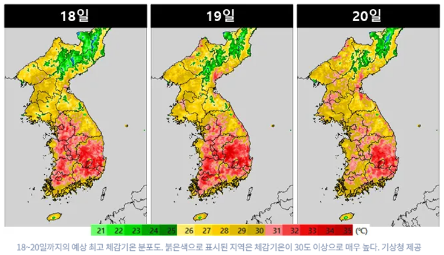
- 예시 2. 축구선수의 이동 분포
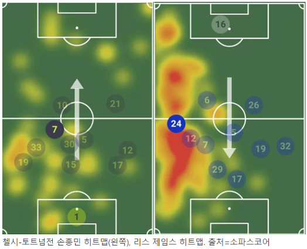
- 예시 3. 웹/앱 화면에서의 사용자 클릭 분포
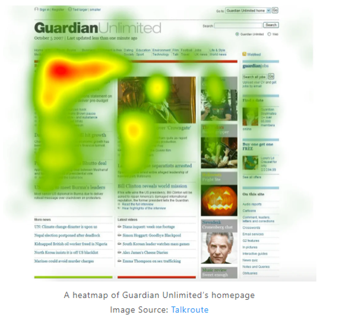
이렇게 히트맵은 특정 이미지 위에서 대상의 이동과 분포를 표시하기 위한 목표로 쓰이는 것이 기본적인 사용 목적이라고 할 수 있습니다. 특히 마지막 예시 3은 사용자 경험(UX)을 분석하고 개선하기 위해 사용한 사례인데, 히트맵이 가장 유용하게 사용되는 분야 중 하나입니다.
그러나 꼭 특정 이미지 위에서만 이 차트를 사용하는 것은 아닙니다. 변수간 분포를 효율적으로 분석하는데에도 히트맵을 사용할 수 있습니다. 이미지 대신 가로와 세로축에 범주형 변수를 놓고 2차원의 격자표를 만들어 주는 것인데요. 이 각각의 격자표에 들어가는 데이터의 값을 컬러로 변환시켜 표현합니다. 아래 예시 차트를 보면 이해가 쉬울 것 같습니다.
- 예시 4. 가입일에 따른 리텐션 지표
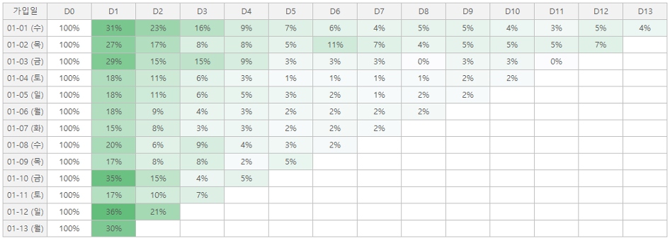
서비스를 운영해 본 경험이 있다면 아마도 익숙한 이미지일텐데요, 필수 KPI 중 하나인 리텐션 지표를 히트맵 형식으로 나타낸 것입니다. 세로축은 가입일자, 가로축은 가입 후 경과일을 변수로 두고 쪼개진 격자선에 리텐션 값의 크기에 따라 색깔의 진함 정도로 표현해준 것입니다.
참고로 축에 올 수 있는 변수는 그룹화된 변수 어떤 것이라도 가능합니다. 예를 들면 ‘레벨 구간’. ‘플레이 횟수 구간’ 등과 같이요. 각각의 축에 해당하는 두 변수와 확인하고자 하는 세 번째 변수의 크기를 색깔로 표시하고 변수 간 패턴과 변동을 보여주는데 유용한 차트입니다.
또한 히트맵은 매우 큰 데이터 집합 혹은 많은 수의 범주를 가진 변수에도 활용할 수 있습니다. 이 차트를 사용하는 목적은 전체 데이터의 흐름과 맥락이기 때문에 전반적인 분포를 확인할 수만 있으면 되기 때문입니다.
아래는 가로축과 세로축에서 많은 범주를 가진 변수가 사용된 히트맵입니다.
- 예시 5. 많은 수의 범주를 가지는 히트맵 (가로축 : 콘텐츠 포인트, 세로축 : 레벨)
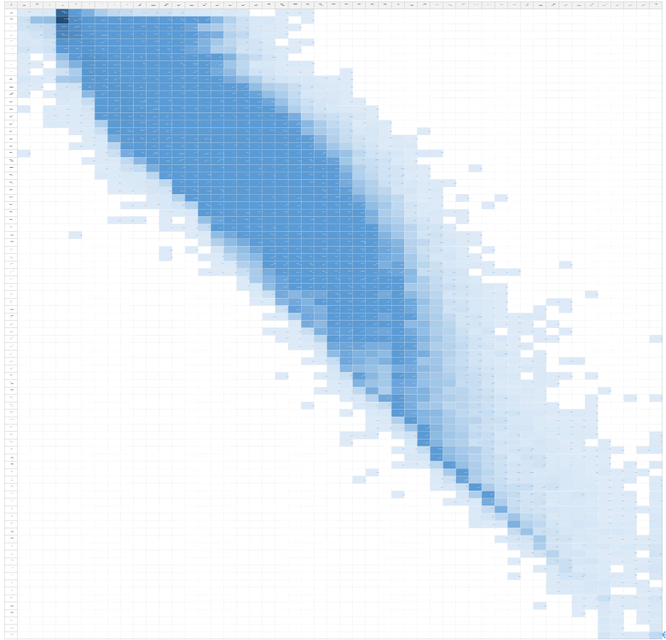
물론 적은 수의 범주를 가진 변수를 활용하는 경우가 더 많습니다.
- 예시 6. 적은 수의 범주를 가지는 히트맵 (가로축 : 콘텐츠 횟수, 세로축 : 가챠 횟수)
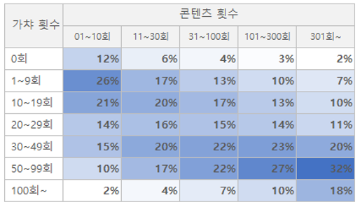
만약 그룹화 할 수 있는 두 변수를 관점으로 특정 집계 값의 분포를 확인하고 싶다면, 히트맵을 활용해봐도 좋겠습니다.
트리맵 활용하기
앞서 살펴본 히트맵과 비슷하게 생겼지만 다른 차트가 있습니다. 바로 트리맵입니다.
이름에서 알 수 있듯이, 트리맵 차트는 나무의 형식으로 데이터를 묘사합니다. 때문에 계층이 있는 데이터를 표현할 때 사용할 수 있습니다. 계층이 있다는 말은 곧 사용되는 변수가 범주형 범수라는 의미입니다. 참고로 계층이 있는 데이터란 이런 것입니다.
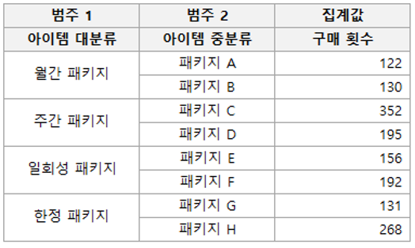
트리맵에서는 이러한 구조의 데이터를 토대로 가장 상위 범주가 전체에서 차지하는 비중을 첫 번째로 보여주고 다음으로 아래 계층에 해당하는 변수의 범주별 비중을 보여줍니다. 따라서 주요 범주와 하위 범주를 함께 보여주고 싶을 때 유용할 수 있습니다. 복잡한 데이터 집합에서 부분 대 전체 관계를 전달하는데 용이합니다.
- 예시 1. 수출액의 상품 분류별 비중
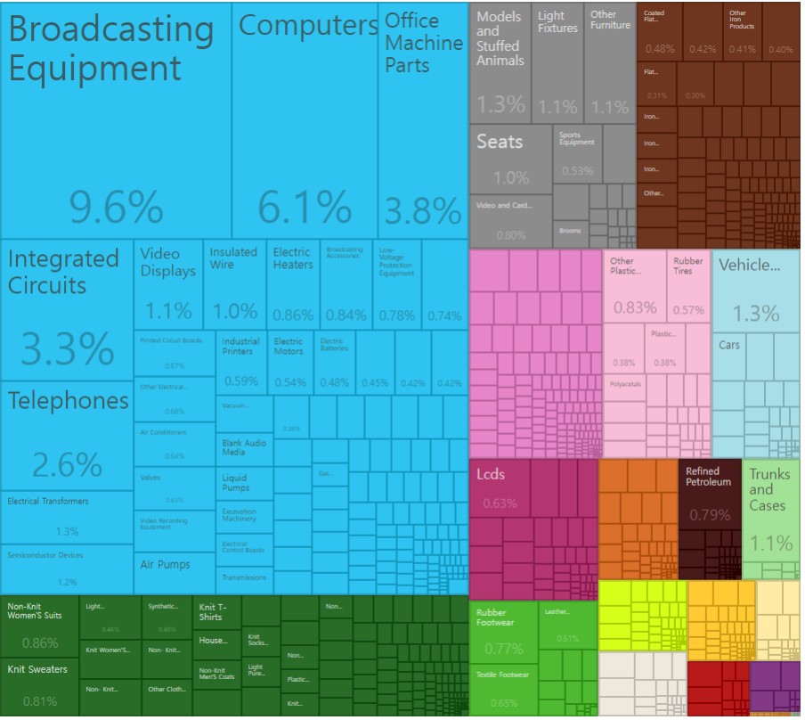
위 예시처럼 범주별로 특정 데이터 집합이 전체 데이터에서 차지하는 비율을 면적과 색상으로 구분하고 각 집합을 구성하는 요소가 무엇인지 한눈에 파악할 수 있도록 해줍니다. 즉 나누어진 직사각형의 치수와 색상은 각 직사각형과 관련된 정량적 변수에 기반하여 계산된다는 뜻입니다.
만약 인터랙티브한 기능을 제공할 수 있다면 각 부분 집합을 클릭하고 더 자세히 드릴다운(drill-down)함으로써 하위 구성 요소를 추가로 살펴볼 수 있습니다. 참고로 기본적으로는 면적 그리드를 베이스로 범주를 구분하지만 하위 계층을 구분할 때 어떤 방식(단순히 그리드만 구분 혹은 드릴다운 해야 하위 계층 노출 등)으로 보여줄 지에 대해서는 구현 가능한 방식으로 선택하면 됩니다.
히트맵과의 차이?
히트맵은 집계된 값의 크기에 따라 색상을 부여하지만 트리맵에서는 범주의 차이를 구분하는 용도로 색상을 부여합니다.
참고하면 좋을 특성?
트리맵의 직사각형은 대개 크기에 따라 정렬됩니다. 표준 형식은 직사각형의 크기 범위가 차트의 왼쪽 상단 모서리에서 오른쪽 하단 모서리로 이동하는 것입니다. 따라서 왼쪽 상단 모서리에는 가장 큰 직사각형이 있는 반면 차트의 오른쪽 하단 모서리에는 가장 작은 직사각형이 됩니다.
트리맵을 활용하면 다양한 범주를 쉽게 구분하고 많은 데이터 값을 다른 형식보다 훨씬 쉽게 읽고 해석할 수 있습니다. 특히 제한된 공간에 엄청난 양의 데이터를 압축해야 하는 경우, 높은 수준으로 요약해야 하거나 동시에 여러 매개변수를 확인해야 하는 경우 트리맵을 활용해보는 것을 추천합니다.
박스 플롯
들어가며
이전 시리즈에서는 기본적이고 공통으로 사용되는 시각화 방식들에 대해 살펴보았습니다. 간단한 내용들을 전달하고자 할 때는 이 정도의 차트 유형만 알아두어도 보고서를 작성하는 데 있어서 큰 문제 없을 것입니다.
그럼에도 때에 따라 조금 더 심화된 차트를 사용해야 할 때가 있습니다. 오늘은 약간 생소하고 어려울 수 있으나 알아두면 유용한 시각화 유형을 소개하겠습니다.
상자수염그림(=Box plot) 활용하기
데이터를 파악하기 위한 가장 빠르고 보편적인 방법으로 우리는 ‘평균’을 사용합니다. 그러나 평균만으로는 관측값의 분포, 범위 같은 요소를 파악하기 어렵기 때문에 전체 자료를 대표하는 값으로 사용했을 때 자칫 왜곡된 해석을 하게 될 수 있습니다. 한 번쯤은 들어보셨을 ‘평균의 함정’에 빠질 수 있죠.
그 때문에 우리는 한 두 가지의 대푯값만으로 전체 자료를 파악할 때 언제나 주의가 필요합니다. 때로는 다양한 요약 값(최대, 최소, 평균, 중위값 등)을 함께 봐야 할 수 있습니다. 그럴 때, 이러한 값들을 한 번에 시각화한 그래프가 바로 상자수염그림입니다.
먼저 상자수염그림의 기본 형태와 각각이 나타내는 수치들을 살펴볼까요?
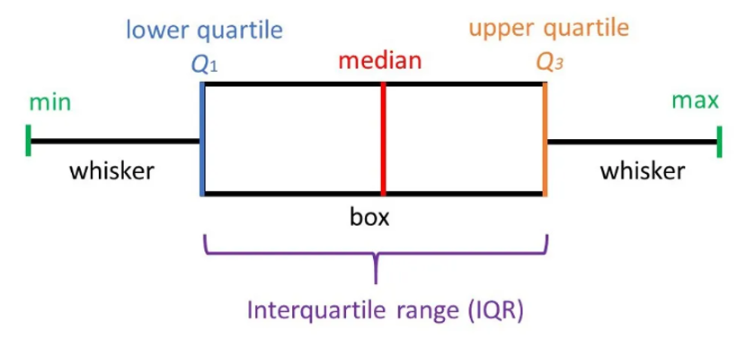
박스플롯의 기본 형태
- Min : 최댓값
- Q1 (Lower quartile) : 1분위수
- Median : 중위값 (=2분위수)
- Q3 (Upper quartile) : 3분위수
- Max : 최솟값
- IQR (Interquartile range) : Q3과 Q1의 차이를 통해 나타낸 범위
‘상자수염그림’이라는 명칭에서처럼, 이 차트의 기본 형태는 상자(box)와 수염(whisker)으로 구성되어 있습니다. 각각은 위와 같이 다섯 개의 요약된 숫자를 의미합니다. 왼쪽에서 오른쪽으로 갈수록 큰 요약 값을 의미함으로, 관측값들을 크기 순서대로 나열하고 그 위에 그림을 그렸다고 생각해 본다면 더 와닿을 것 같습니다.
참고로 분위수란 관측값들을 작은 수부터 큰 수의 순으로 배열하고 이를 n 등분했을 때, 그 경계가 된 수치를 의미합니다. 따라서 4등분을 했다면 경계가 되는 수는 3개가 되고 이것이 제1 사분위 수, 제2 사분위 수, 제3 사분위 수가 됩니다. 즉, 제1 사분위 수는 1번째 등분과 2번째 등분의 경계값을 나타냅니다. 제 2, 3사분 위수도 동일한 개념입니다.
아래 실제 수치들을 통해 더 쉽게 이해해보겠습니다.
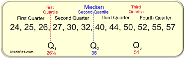
사분위수 예시
24~57 사이에 12개의 관측값이 나열되어 있습니다. 이를 크기순으로 배열하고 4등분 했을 때의 경계 값이 점선으로 나타낸 부분입니다. 이 값이 사분위수가 됩니다.
참고로 제2사분위수(Q2)는 중앙값, 중위값(median)이라고도 부르는데, 말그대로 데이터에서 중앙에 위치하기 때문입니다. 예시에서는 정확히 가운데 있는 숫자가 없으므로 양옆의 숫자를 더해서 나눠준 수치가 됩니다. 또한 사분위 범위(IQR)라는 개념도 있는데, 제3분위수(Q3)와 제1사분위수(Q1)의 차이를 뜻합니다. 만약 이 사분위 범위(상자의 크기)가 작다면 데이터가 중앙값 근처에 모여있다는 의미가 됩니다.
이렇게 여러 요약 값을 한 번에 확인할 수 있기 때문에 이상치의 유무, 이상치가 있다면 얼마나 포함되어 있는지 등을 쉽게 판단할 수 있고 왜곡된 해석을 할 가능성이 줄어듭니다.
많은 관측값의 특성을 빠르게 파악할 수 있다는 장점이 있지만 자주 사용되지 않는 통계 수치가 포함되고 차트 해석에 대한 선지식이 필요하다 보니 사람들이 흔히 접하는 기사나 데이터에 익숙하지 않은 사람들을 대상으로 하는 보고서 등에는 많이 사용하지 않는 차트입니다.
하지만 가장 기초적으로 산포도를 표현하기에 좋은 차트이고 엑셀로도 표현 가능하니 데이터와 시각화에 관심 있는 사람이라면 한 번쯤 익혀두는 것을 추천합니다.
더 나아가서, 상자수염그림을 통해 여러 그룹의 산포도를 한 번에 비교해보는 것 역시 가능합니다.
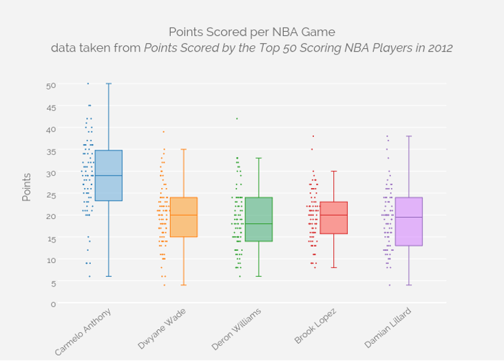
상자수염그림을 활용한 그룹 간 비교 예시 : NBA 선수별 득점 현황
상자수염그림을 사용할 때 한가지 유의 사항이 있습니다. ‘데이터의 규모’는 표현할 수 없다는 점입니다. 특히 위와 같이 여러 그룹의 산포도를 비교하는 목적으로 사용했다면 규모가 크게 차이 나는 그룹은 없는지 주의가 필요합니다. 10명을 대상으로 한 요약값과 100명을 대상으로 한 요약값은 집단을 대표하는 신뢰도 측면에서 차이가 있을 수 있으니까요.
따라서 이 부분을 보완하기 위해 위 예시처럼, 차트 내 관측값마다의 점들을 나란히 표현(jitter chart)해주기도 합니다. 혹은 규모를 나타내는 표를 함께 보여주는 방법도 있습니다.
위 차트를 간단히 해석해볼까요?
그룹(=선수)별 점들은 경기마다의 점수를 나타내며, 상자 수염 밖으로 찍힌 몇 개의 점들은 이상점을 나타냅니다. 여기서 사용된 데이터는 실제 경기 결과이니, 이상점이라 표현될 만큼 높은 점수를 얻었다고도 볼 수 있겠네요.
또한 선수별로 살펴보면 아주 큰 차이는 없지만 특히 파란색 선수가 점과 수염이 넓게 퍼져 있는 모습입니다. 매 경기의 점수 변동이 크다는 의미입니다. 다시 말해, 잘할 때와 못할 때의 점수 차이가 크다는 것이죠.
반대로 상자의 크기와 수염이 짧은 빨간색 선수는 경기마다 점수 편차가 적다고 볼 수 있습니다. 다른 선수에 비해서는 비교적 일정한 수준의 득점을 해 온 것입니다.
데이터의 분포에 대한 요약 정보와 이상치를 하나의 차트에서 확인할 수 있는 상자수염그림에 대해 살펴보았습니다. 꼭 보고서를 위한 목적이 아니더라도 분석해야 할 데이터의 특성을 파악하고 탐색하는 과정에서도 유용하게 활용할 수 있으니 다양한 인사이트를 얻을 수 있는 계기가 되길 바랍니다.
스몰멀티플즈
들어가며
지금까지 몇 가지 차트 유형을 살펴보았는데요, 오늘은 배웠던 차트들을 다른 방식으로 활용해보는, 새로운 관점의 시각화 방식을 소개해보고자 합니다. 바로 여러 차트를 한 번에 보여주는 ‘스몰멀티플즈’ 입니다.
스몰멀티플즈 활용하기
스몰멀티플즈(small multiples)는 명칭에서 나타나는 그대로 작은 차트 여러 개를 나열하는 시각화 방식 중 하나입니다. 바로 예시를 한번 볼까요?
- 예시 1. 미국 서부의 가뭄 정도를 표현한 히트맵을 연도별로 비교
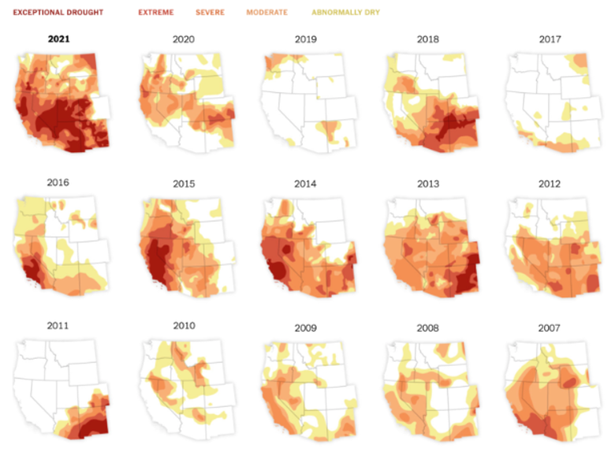
1개년의 가뭄 정도를 표현한다면 하나의 맵차트로 충분하지만 연도별 비교가 필요하다면, 이렇게 작은 차트를 여러 개 나열함으로써 연도에 따라 가뭄의 심각성이 어떻게 변화해 왔는지 한 번에 살펴볼 수 있습니다.
아마 처음 접한 분들도 이 예시 하나만으로 스몰멀티플즈에 대한 기본 개념을 이해하셨을 것 같은데요, 어쩌면 이런 형태의 시각화 방식을 몰랐더라도, 자연스럽게 동일한 형태의 차트를 원하는 기준에 따라 나열하여 보고서에 활용하고 있었을 수도 있습니다.
간단히 정의해보자면 스몰멀티플즈는 동일한 데이터 값(Y)을 기준으로 동일한 유형의 시각화 차트를 나열하는 것이라고 할 수 있습니다. 다른 예시를 통해 이해해 볼까요?
- 예시 2. 나이에 따른 선호도 변화를 유명인 별로 비교
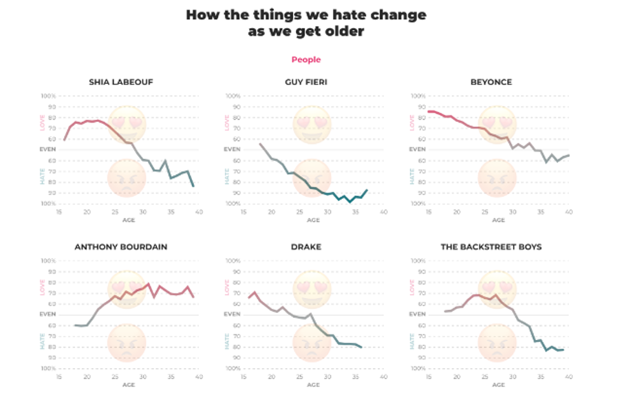
6개 차트는 모두 동일한 기준의 축을 가집니다. 각 차트의 유형도 라인 차트로 동일하고요. 그리드에 따라 특정 사람에 대한 차트를 나타낸다는 사실만 달라집니다.
앞서 살펴본 예시 1에서도 가뭄의 정도를 나타내는 색상의 진하기 정도나 맵의 범위는 모두 다 동일한 상태에서 그리드에 따라 연도만 달라지는 차트였습니다. 두 예시의 차이라면 시계열을 기준으로 나열했느냐 혹은 카테고리컬한 정보를 값으로 갖는 범주형 변수를 기준으로 나열했느냐로 볼 수 있습니다.
이렇듯 스몰멀티플즈에서는 전달하고자 하는 맥락이 무엇인지에 따라 차트의 정렬 기준이 달라집니다. 때문에 이 정렬 기준이 차트가 나타내고자 하는 중요한 요소 중 하나이기도 합니다. 물론 언급 된 예시 모두 꼭 스몰멀티플즈가 아니더라도 원하는 바를 나타낼 수는 있습니다. 다만 보여주고자 하는 목적에서 이러한 방식이 더 효율적이라 판단했기 때문입니다.
그렇다면 언제 스몰멀티플즈를 사용하는 것이 효과적일까요?
스몰멀티플즈의 장점
먼저 각 차트의 시각적 패턴을 바탕으로 항목 간 데이터를 빠르게 비교하고자 할 때 유용합니다.
- 예시 3. 연도와 월에 따른 산불 발생 정도를 비교
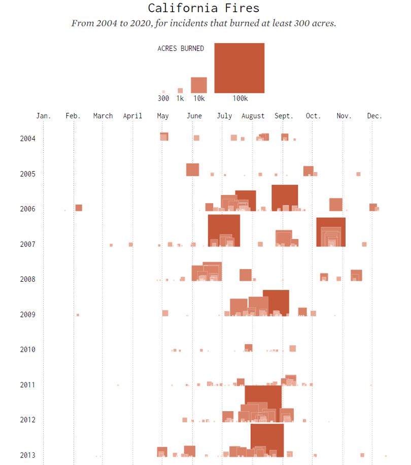
예시 3과 같이 각 연도의 월별 비교가 필요할 때, 이렇게 위에서 아래로 나열하는 방식으로 스몰멀티플즈를 구성한다면 그렇게하지 않았을 때 보다 항목 간 비교가 훨신 편해집니다. 차트를 해석하는 사람 역시 별도의 가이드 없이도 자연스럽게 연도별, 월별 산불 발생의 정도를 비교하게 됩니다.
또한 하나의 차트에 범례가 많은 변수가 관점으로 들어가 가독성이 떨어지고 복잡해졌을 때, 스몰멀티플즈를 대안으로 생각할 수 있습니다. 이렇게 그리드를 나누고 나열함으로써 가독성과 복잡성에 대한 문제를 해결하는 것입니다. 독자들은 하나의 차트로 차트를 읽는 법과 데이터의 의미를 이해한 뒤, 동일한 맥락으로 나머지 차트를 훑어보면서 전체 데이터의 의미를 바로 이해할 수 있기 때문에 꼭 하나의 차트 안에 모든 걸 포함할 필요는 없습니다.
또 다른 재밌는 예시를 살펴볼까요?
- 예시 4. 특정 그룹별 선택한 조건에 해당하는 비중
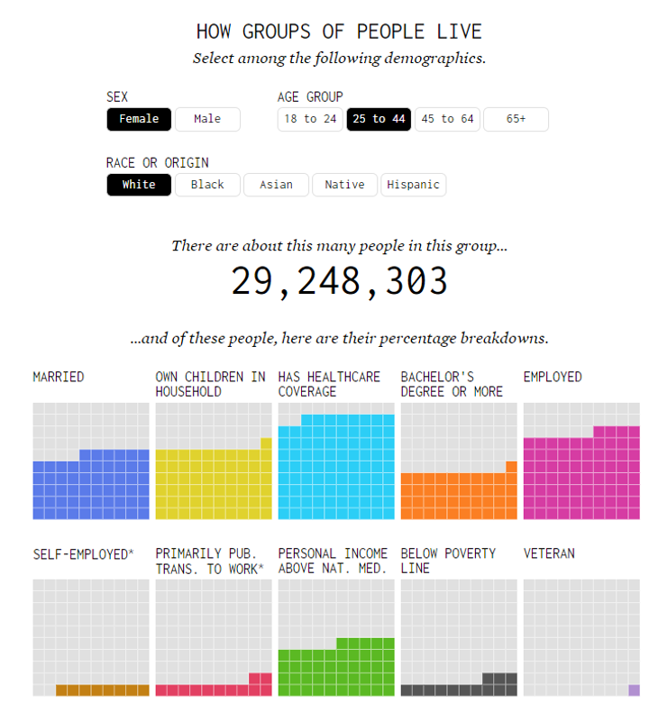
특정 집단을 모수(여성, 25~44세, 백인)로 두고 전체에서 각 조건 (결혼여부, 고용여부 등)을 만족하는 사람의 비중이 얼마나 되는지를 사각파이 차트의 나열을 통해 전달했습니다. 단순히 숫자로 나열하여 전달하는 것 보다 직관적이고 조건별 비중의 차이를 한눈에 알아볼 수 있습니다. 시각적인 즐거움도 함께요.
이렇게 모든 데이터를 규칙에 따라 한번에 제시하므로 해석할 때 시야를 계속해서 이동할 필요 없이 자연스럽게 비교하며 해석이 가능하게 됩니다.
참고로 스몰멀티플즈로 나타낼 수 있는 차트에 대한 제한은 없습니다. 위에서 언급했듯이 규칙에 맞게 차트를 구성한다면 어떤 스토리텔링이라도 가능합니다. 아래 예시에서 처럼요.
- 예시 5. 년도에 따라 성씨별 남녀의 수를 비교
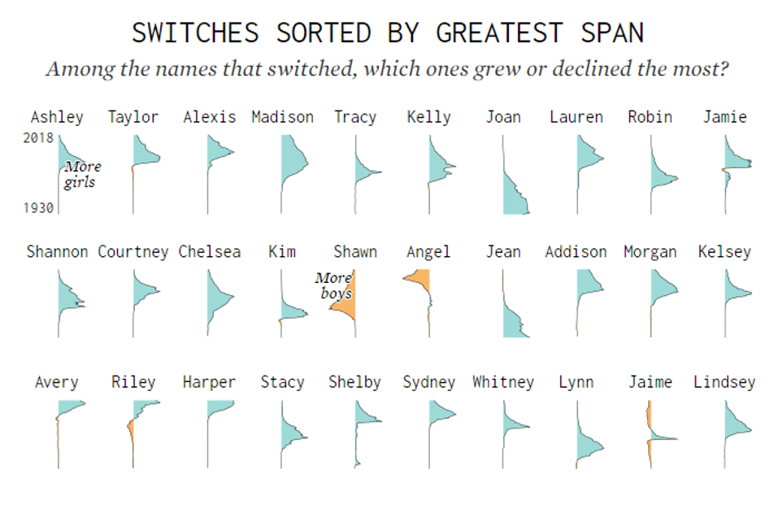
특정 성씨에 대한 연도별 남녀의 수 추이를 보여주는 차트입니다. 위 예시에서는 대체로 파란색 영역이 주를 이루는 것을 보아 여성에게 많이 사용되는 성씨들로 구성되어 있는 것으로 보이는데요. 그 중 Riley 라는 성은 과거에는 주로 남자에게 사용되다가 최근으로 갈수록 여자에게 많이 사용되는 것으로 보입니다. Jaime 라는 성은 특이하게도 잠깐 여성에게 많이 쓰였다가 다시 남성에게 많이 사용되는 추이를 보이네요.
이렇게 전체적인 데이터의 탐색을 스몰멀티플즈로 한 뒤, 특이점을 보이는 특정 카테고리를 찾아내는 목적으로 활용할 수도 있습니다.
이번 편은 거시적인 관점에서 데이터의 흐름을 파악할 수 있는 효율적인 시각화 방식인 스몰멀티플즈에 대해 이야기해보았습니다. 혹시나 한번에 제한된 수의 차트만 보여줘야 한다는 고정관념을 가지고 있었다면 오늘 보여드린 다양한 예시를 통해 원하는 이야기를 전달하는 새로운 방법을 고민해볼 수 있는 계기가 되었으면 좋겠습니다.
생키 다이어그램
들어가며
목적성에 맞는 시각화는 언제나 중요합니다. 유저가 앱 서비스에 들어와 이동하는 액션 프로세스를 시각화하고 싶다거나 어떤 에너지가 원천에서 시작해 어디까지 흘러가게 되는지에 대한 흐름을 한 번에 보여주고 싶다면 라인 차트나 막대 차트로는 한계가 있을 것입니다. 이런 특정한 경우에, 가장 효과적으로 시각화를 도와주는 차트가 있습니다. 바로 생키다이어그램 입니다.
생키 다이어그램이란
생키 다이어그램은 어떤 주제 안에서 발생하는 흐름의 과정을 시각적으로 표현하며 항목별 기여도가 어떻게 차이 나는지 확인하는 데 효과적입니다.
주로 공학, 환경과학, 경제학 등에서 에너지와 물질의 흐름을 나타내기 위해 사용되는 경우가 많지만 정보 시각화에서 데이터의 흐름을 나타내거나 어떤 행동의 흐름을 나타내는 경우처럼 다양한 주제에서 활용할 수 있습니다.
간단한 예시를 통해 생키 다이어그램이 어떻게 구성되는지 살펴볼까요?
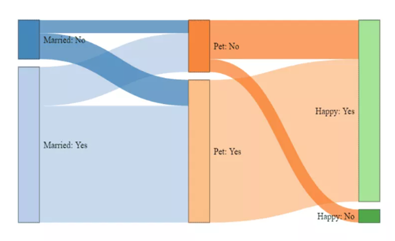
생키 다이어그램은 ‘노드’와 ‘링크’로 구성되어 있습니다. 위 예시로 이해해보자면 ‘노드’는 Married 여부, Pet 여부, Happy 여부를 표시한 부분을 나타내고 ‘링크’는 이러한 노드 사이를 연결해 이동 경로를 보여주는 역할을 합니다. 이 링크의 경로와 두께를 통해 전반적인 흐름을 파악하고 각각 어느 수준의 기여도를 가지는지를 파악하는 것입니다.
이를 토대로 해석해보자면, 첫 번째 노드에서 결혼하지 않은 사람보다 결혼한 사람이 훨씬 더 큰 비중을 차지한다는 것을 알 수 있고 결혼한 사람 중에는 반려동물을 입양한 사람이 대다수이며 이들의 거의 모두가 행복하다고 답했음을 확인할 수 있습니다.
물론 위 차트는 노드와 링크의 수가 비교적 간단하기 때문에 해석이 단순하고 직관적입니다. 그러나 대부분의 경우에 더 많은 단계(노드)와 링크가 포함될 수 있습니다. 단계가 늘어나면 노드 간 구분이 잘 되지 않거나, 링크가 겹치는 등 경로와 비중을 파악하기 힘들어진다는 한계점이 있으므로 유의해야 합니다. 하지만 복잡한 프로세스를 단순화해서 보여주는 데에는 아주 효과적인 차트이기 때문에 적당한 수의 노드와 링크로 구성한다면 보다 효율적인 사용이 가능합니다.
다양한 활용 사례 살펴보기
그럼 다양한 사례 몇 가지를 더 살펴보겠습니다.
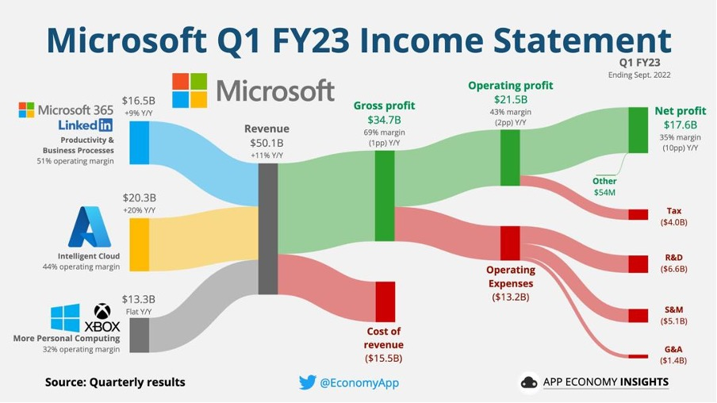
첫 번째 사례는 MS의 23년도 1분기 손익계산 흐름을 나타낸 차트입니다. 가장 왼쪽의 노드를 보면 MS가 제공하는 몇 개의 서비스로부터 Revenue를 계산 후 이를 두 번째 노드에서 합산합니다. 이후 이 매출액에서 Cost와 Gross profit이 차지하는 비중을 알 수 있고 다시 Gross Profit이 어떻게 분류되는지 더 세부적으로 나타냅니다. 가장 마지막 노드로 이어지는 링크의 너비를 통해 Gross profit에서 Net profit이 차지하는 크기와 Tax, R&D로 사용된 금액의 크기가 얼마나 되는지 비교할 수도 있습니다.
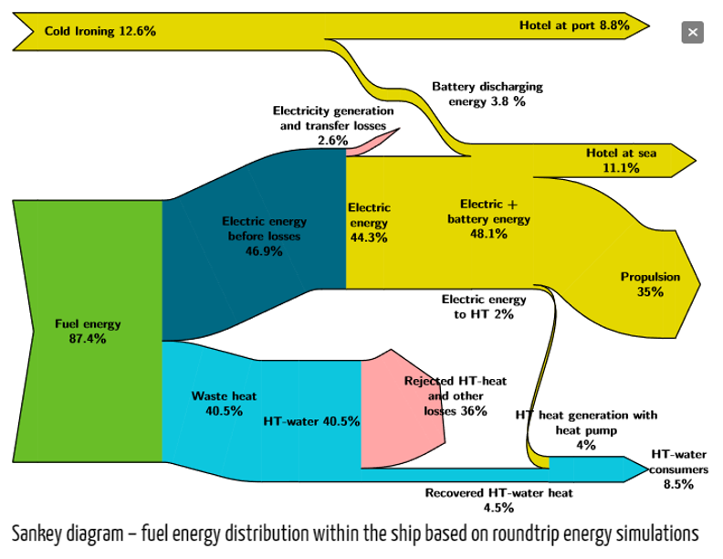
두 번째는 생키 다이어그램이 많이 쓰이는 영역 중 하나인 에너지 흐름에 대한 사례입니다. 가장 왼쪽 노드를 보면 전체 연료 에너지를 ‘Cold Ironing’과 ‘Fuel Energy’ 두 항목으로 가장 먼저 분류하고 이후 이 에너지들이 각각 어떻게 사용되는지에 대한 흐름을 보여주고 있습니다. 가장 오른쪽의 노드에서는 최종적으로 에너지가 흘러간 곳이 어딘지와 각 비중을 확인할 수 있습니다. Propulsion 항목이 가장 큰 비중을 차지하네요.
앞선 사례와는 다르게 노드와 링크에 디자인적인 요소가 가미된 차트라 조금 낯설게 느껴질 수도 있지만 뜻하는 바는 같습니다.
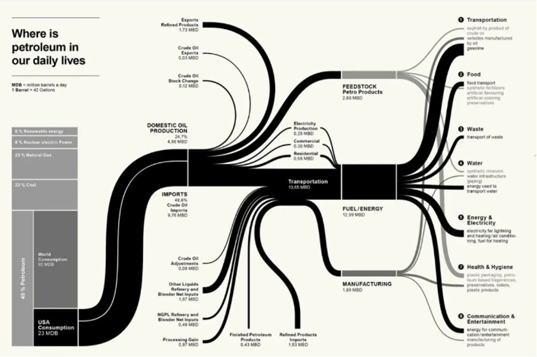
세 번째는 다른 차트와의 조합으로 만들어진 석유의 소비 흐름을 나타낸 독특한 사례입니다. 좌측에는 우리가 사용하는 자원들의 비중을 트리맵과 유사한 형태로 나타내고 이 중 미국의 석유(Petroleum) 사용이 어떤 흐름으로 생산 및 소비되고 있는지를 우측의 생키 다이어그램으로 표현했습니다.
첫 노드를 살펴보면 미국의 석유 생산은 크게 국내 생산(Domestic oil production)과 수입(imports)으로 나뉘고 여러 가지 복잡한 흐름을 거친 뒤 마지막 노드 분포에서 석유가 교통(Transportation), 음식(Food), 물(Water) 등으로 최종 소비됨을 확인할 수 있습니다.
꼭 어떤 디테일한 항목에 대한 비교가 아니더라도, 여러 개의 노드와 링크의 구성을 통해 석유의 소비 흐름이 굉장히 다양하게 이루어지고 있구나 라는 거시적인 상황에 대한 파악도 할 수 있습니다.
사례에서 볼 수 있듯이 생키 다이어그램은 데이터의 흐름을 직관적으로 나타낼 수 있는 좋은 방식 중 하나입니다. 다만 자주 사용되는 차트가 아닌 만큼 사용하는 경우에는 해석을 위한 추가적인 설명을 포함하는 것이 좋겠습니다.
생키 다이어그램에 익숙하지 않은 사람이더라도 각각의 노드를 천천히 따라가다보면 해석을 하는 데는 그리 어렵지 않으니 필요에 따라 활용해보는 것을 추천합니다.
데이터 시각화와 EDA (탐색적 데이터 분석)
들어가며
지금까지 살펴본 데이터 시각화 시리즈는 분석 결과를 커뮤니케이션하기 위한 마지막 단계이자 의사결정 전 단계에서 주로 행해지는 수단으로서의 차트 유형에 대해 주로 이야기 해왔는데요, 데이터 시각화는 그 외에도 다양한 목적으로 여러 단계에서 활용됩니다.
오늘은 이에 해당하는 탐색적 데이터 분석(EDA)에 대한 개념을 소개하고 EDA의 필요성 및 그 과정에서 사용하는 데이터 시각화는 어떤 목적과 의미를 가지는지 한 번 살펴보겠습니다.
탐색적 데이터 분석(EDA : Exploratory Data Analysis)이란?
데이터 분석에 관심을 가져본 사람이라면 EDA에 대해 한 번쯤은 들어보셨을 텐데요, 본격적인 분석을 하기 앞서 데이터 전반을 살펴보는 과정을 말합니다.
분석 범위에 포함되는 모든 변수의 분포를 도표화하거나(e.g. 히스토그램), 시계열 데이터를 도표화하고(e.g. 라인 차트), 변수 간 상관관계를 비교하며(e.g. 산점도 차트), 변수 각각의 요약 통계를 한 번에 확인(e.g, 상자 수염 그림) 하는 식으로요. 한마디로 변수를 요약하고 변형하며 이를 시각화하는 과정을 통해 데이터를 종합적이고 체계적으로 둘러보는 것입니다.
그렇다면 EDA가 꼭 필요한 이유는 무엇일까요?
전반적인 데이터의 분포와 값을 검토함으로써 현상을 더 잘 이해하고 잠재적인 문제를 발견할 수 있기 때문입니다. 대체로 분석을 시작하기 전, 대략적인 설계가 잡혀있는 상태겠지만 그럼에도 이 단계가 필요한 이유를 정리해 보자면 아래와 같습니다.
- 데이터 분석 프로젝트 초기 가설 수립 및 데이터 수집 계획에 참고
- 사전에 정확한 가정이 이루어졌는지, 질문(가설)이 적절한지 검토
- 분석에 사용할 통계 기법이 적절한지 판단
- 다양한 각도에서 데이터를 살펴보며 문제 정의 단계에서 미쳐 발생하지 못했을 패턴을 발견
이렇게 EDA의 결과에 따라 발견된 인사이트는 새로운 질문을 만들어내거나 계획을 수정하는 데 도움을 주기도 하고, 머신러닝과 같은 정교한 데이터 분석 과정에서 알고리즘의 성능을 향상하는데 활용되기도 합니다.
EDA와 데이터 시각화의 차이?
EDA 과정에서 시각화는 굉장히 중요한 도구이고 큰 비중을 차지하기 때문에 언뜻 보면 같은 역할로 보이지만 구체적으로 들여다보면 의미하는 바가 다른 방법론이라고 할 수 있습니다.
Velleman and Hoaglin가 제안한 EDA의 4가지 구성 요소
- Residual analysis (잔차의 해석)
잔차(Residual)란 예측과 실제의 차이로 평균, 중간값 등으로부터 멀리 떨어진 값이 있는지 확인하고 해석하는 것. 일반적인 기준에서 벗어난 데이터의 특징을 찾음.
- Data transformation or re-expression (자료의 재표현)
데이터를 적당한 척도로 바꿔주는 것. 예를 들어 중국 위안화(CNY)로 표시된 범죄 피해금액을 한국 원화(KRW) 단위로 변환하는 것과 같음. 실제 EDA에서는 분포 정규화, 제곱근 변환 등을 시행.
- Resistance procedures (저항성)
이상치, 결측치 등을 찾고 이를 대체할 변수를 사용. 주로 기술통계량으로 대체되며 중간값, 평균값 등이 있음.
- Data visualization (데이터 시각화)
자료를 시각적으로 표현하여 데이터 간의 관계를 파악하고 크고 복잡한 데이터를 대략적으로 살펴볼 수 있음.
Velleman and Hoaglin가 제안한 EDA의 4가지 구성 요소에 따르면 데이터 시각화는 EDA의 구성요소 중 하나입니다.
위의 내용을 참고하여 일반적으로 통용되는 데이터 시각화와 EDA를 비교해 본다면, 전자는 주로 연구 후 분석 결과를 커뮤니케이션하는 목적의 시각화를 칭하는 용어로 사용되는 경향이 있습니다. 일종의 ‘브리핑’에 가까운 셈입니다.
이와는 조금 다르게 EDA에서도 데이터 시각화를 주 방법론으로 사용하기는 하지만, 이 과정에서는 데이터를 탐색하기 위한 목적이므로 브리핑보다는 일종의 '수사 현황판'이라고 할 수 있습니다. 또한 시각화하는 것 외에도 요약 통계와 같은 숫자를 다루는 내용도 포함됩니다.
마치며
이번 편에서는 일반적인 데이터 시각화와 탐색적 데이터 분석(EDA) 과정에서의 데이터 시각화의 차이에 대해 살펴보았습니다. 이후 시리즈에서는 EDA 과정에서의 시각화는 어떻게 진행되는지 살펴보겠습니다.
거래소 활성화 지수 개발기
들어가며
서비스 운영을 위해서는 매일 많은 수의 지표를 모니터링해야 하는데요, 매출, 이용자수, 리텐션과 같은 핵심적인 지표들 외에도 게임의 밸런싱과 건강도를 판단하기 위해 다양한 플레이 지표들을 살피는 과정이 필요합니다.
이번 신규 지표 개발은 매출이나 이용자수 같은 단편적인 지표 외에 콘텐츠, 경제 상황과 같이 여러가지 변수를 종합적으로 확인하여 판단이 필요한 경우에, 보다 빠르고 간편하게 모니터링하여 게임 내 현황을 파악할 수 있는 방법에 대한 고민으로 시작했습니다.
이러한 고민을 바탕으로 동종/타 업계에서 유사한 형태의 니즈로 도출해 낸 지표 사례를 참고하여 내부 프로젝트에 적용해본 과정을 설명하고 이를 다양한 형태로 확장하여 활용해볼 수 있는 방안을 제시하고자 합니다.
전반적인 데이터의 분포와 값을 검토함으로써 현상을 더 잘 이해하고 잠재적인 문제를 발견할 수 있기 때문입니다. 대체로 분석을 시작하기 전, 대략적인 설계가 잡혀있는 상태겠지만 그럼에도 이 단계가 필요한 이유를 정리해 보자면 아래와 같습니다.
거래소 시스템의 활성화 정도를 하나의 지표로 표현해 본다면?
앞선 저의 고민은 ‘많은 수의 지표를 하나로 표현할 수는 없을까’ 였습니다. 우리가 평소 사용하는 몇 가지 파생 변수들 (E.g. Stickiness=DAU/MAU*100 등) 역시 대개 2~3가지의 변수를 조합하여 나타내고는 하지만 그 이상으로 다양한 변수를 하나로 표현하기 위해서는 단순 사칙연산이 아닌 다른 접근 방식이 필요했습니다. 기존에 사용하던 분석 기법을 비롯하여 관련 자료들을 찾는 과정에서 여러가지 방법론(주성분 분석, 독립성분 분석, 다차원 척도법 등 : 흔히들 ‘차원 축소’를 위해 사용되는 기법들)을 검토하게 되었는데, 저는 그 중 상대적으로 자주 쓰이고 본 지표 개발에 가장 적합하다고 판단되는 주성분 분석을 사용하기로 했습니다.
* 주성분 분석이란? 여러 변수들 간에 내재하는 상관관계, 연관성을 이용해 소수의 주성분으로 차원을 축소함으로써 데이터의 이해 및 관리를 쉽게 해주는 분석 기법으로 서로 연관되어 있는 변수들의 정보를 최대한 확보하면서 적은 수의 새로운 변수들을 생성하는 방법
참고로 본 포스팅에서는 분석 기법에 대한 자세한 설명은 생략하고 개략적인 적용 과정만 간단히 언급할 예정입니다.
다음으로 어떤 성격의 지표에 적용해볼 지에 대한 결정이 필요했습니다. 처음 아이데이션 하는 단계에서 생각했던 지표의 카테고리는 거래소 시스템, PVP/PVE/소셜 등의 특정 콘텐츠에 대한 것이었는데 이번 분석은 지표의 유용성을 테스트하기 위한 목적이므로 비교적 직관적이고 단순한 변수로 구성이 가능한 ‘거래소 시스템’에 대해 먼저 적용하기로 결정했습니다.
본격적인 분석에 들어가기 전, 최종 활용 방안을 고려하여야만 제대로된 분석 설계가 가능합니다. 큰 줄기는 결정했으니 작은 줄기들에 대한 것들을 정리해보자면 아래와 같습니다.
- 시간의 흐름에 따른 비교가 가능해야 함 (일단위)
→ 시간이 갈수록 증가/감소하고 있구나 같은 해석이 필요
- ‘A 일자 대비 B 일자에 활성도가 n배 증가’와 같은 표현이 가능하도록 수치화
→ 특정 시점(론칭일자 등)을 기준으로 증가/감소를 비교할 수 있도록 수치 변환 필요
→ 예를 들어 A 시점의 값을 100으로 변환하고 그 외 숫자들도 이 값을 기준으로 변환하여 상대적인 차이를 빠르게 이해
- 클수록 긍정적인 의미를 나타내야 함
→ 지수가 더 크거나 증가한다는 것은 거래소 호황으로 해석
실제 데이터에 적용해보기
이제 실제 데이터를 활용하여 분석을 진행해보겠습니다. 본 테스트 분석에 사용한 데이터는 거래소 시스템이 운영되었던 게임의 실제 데이터이며, 약 2주간의 거래소 활동 데이터를 토대로 진행되었습니다.
- 1단계 : 변수 선정과 데이터 전처리
먼저 필요한 변수를 선정합니다. 거래소 시스템 현황과 관련있는 변수라면 거래소에 등록된 횟수, 거래가 완료된 횟수, 사용된 재화의 합계, 아이템의 종류 수 등으로 생각해볼 수 있습니다. 참고로 주성분 분석은 변수간 상관관계가 있어도 이를 반영하여 분석해주기 때문에 비슷한 경향성을 보이는 지표일지라도 관련있어 보이는 변수들을 적당히 선정해 줍니다. 참고로 이번 테스트 분석에서는 주요 거래 아이템 별로도 나누어 집계하여 약 24개의 변수를 사용했습니다.
이제 변수를 결정했으니 데이터 셋을 만들어야 하는데요, 아래는 리스트업한 변수를 유저 단위로 요약하여 정리한 데이터 셋의 일부입니다.
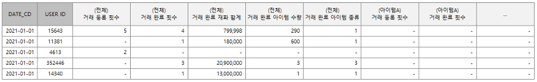
참고로 지표의 요약 단위나 가짓수 등은 어떤 콘텐츠를 선택하는지, 최종적으로 도출된 지표를 어떻게 비교해보고 싶은지 등에 따라 달라집니다. 예를 들어 서버가 나눠지는 게임이라면 유저가 아닌 서버 단위로 요약하여 적용해볼 수도 있습니다. 물론 그렇게 되면 서버별로 지수가 집계됨으로 서버별 비교가 가능한 대신 유저별 비교는 어려워집니다. 본 건에서 일 단위, 유저 단위로 데이터를 요약한 이유는 이를 고려한 것입니다.
- 2단계 : 주성분 분석을 활용하여 원하는 지표 도출하기
특정 일자를 대상으로 주성분 분석 적용 및 지표 도출한 과정을 간단히 요약하자면 아래와 같습니다.
* 주성분 분석 기법을 이미 이해하고 계신 분들이 아니라면 이 부분은 스킵하여도 됩니다.
- step 1. 변수 표준화 후 주성분 분석 실행하여 결과 확인
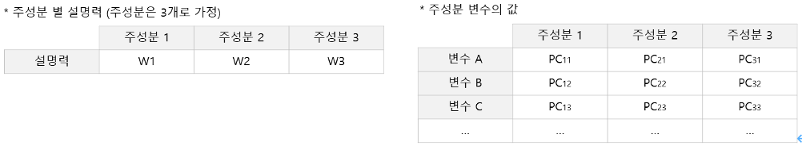
- step 2. 기존의 데이터에 주성분 변수의 값을 곱한 뒤 설명력을 가중치로하여 하나의 값으로 합산
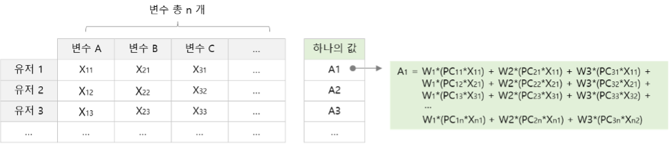
- step 2-1. 유저별 An 값의 비교를 위해, 특정 기준 시점의 값을 기준으로 두고 ‘전체 유저 평균’ 값을 계산
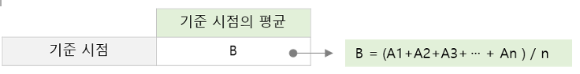
- step 3. B(=기준 시점의 전체 유저 평균 거래소 활성화 지수)를 기준 삼아 유저별 ‘거래소 활성화 지수’ 다시 계산
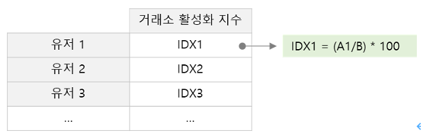
이제 이 값(IDXn)들을 통해 유저별로 기준 시점 대비 얼마나 더 활성화 되었는지 비교할 수 있습니다. 위 샘플 이미지는 하나의 일자 내 유저들의 값을 계산한 것이나, 1~3의 과정을 일자가 추가될 때마다 계산해주면 일 단위의 비교도 가능합니다.
- step 4. 유저별 ‘거래소 활성화 지수’의 일단위 요약 값(평균, 중앙값, 4분위수)을 통해 일별 비교 가능
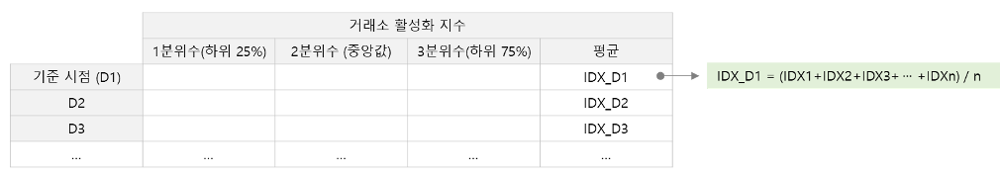
일자별 비교를 위해 유저별로 집계되었던 지표를 요약(평균 or 분위수)해줍니다. 혹은 상자그림과 같은 시각화를 활용하여 전체적인 분포를 한번에 비교해볼 수도 있습니다.
결과 확인하기
계산된 거래 활성화 지수를 태블로 대시보드로 구현하여 간단히 결과를 해석해보겠습니다. 산출된 유저별 거래 활성화 지수를 평균 값으로 요약하여 일별 추이로 나타낸 차트입니다.
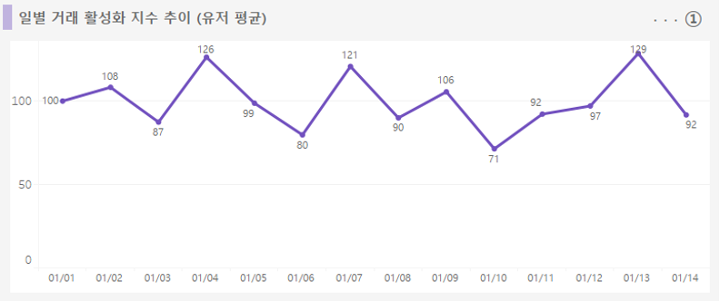
기준이 되는 2021-01-01 시점의 전체 지수 평균은 계산 로직에 따라 100으로 나왔고, 그 외 일자들은 이 기준점 대비 증가 혹은 감소하는 추이를 보여줍니다. 의도한대로 해석해보자면, 2021-01-06의 지수는 80으로 기준 시점(2021-01-01) 대비 활성도가 80% 수준으로 떨어졌다고 표현할 수 있습니다.
이쯤에서 이 지수가 정말 거래소의 현황을 제대로 알려주고 있는지 궁금해집니다. 애초에 ‘거래소 활성화 정도’는 추상적 개념이라 이를 제대로 반영했는가에 대한 정답 데이터는 따로 없습니다. 다만 거래 활성화 지수는 앞의 도출 과정에서 살펴보았듯 거래소와 관련된 많은 변수들의 정보를 포함하고 있습니다. 따라서 어떤 날은 아이템의 거래 수량에 가장 큰 영향을 받았을 수 있고, 또 어떤 날은 거래된 재화의 수량에 큰 영향을 받았을 수 있음을 의미하기 때문에 대략적으로 관련된 변수들과 비교해보거나 만약 라이브 중인 서비스라면 이벤트 등으로 활성화될 외부 요인이 명확했다거나 하는 단서들을 토대로 가늠해볼 수는 있을 것입니다.
실제로 위 일별 거래 활성화 지수 추이와 이 지수의 산출에 사용된 ‘전체 거래 대상 거래된 아이템 수량’의 추이를 나란히 비교해보면 일부 반등의 방향이 다른날도 있긴 하지만 전반적인 추세가 겹치는 포인트들을 확인할 수 있습니다.
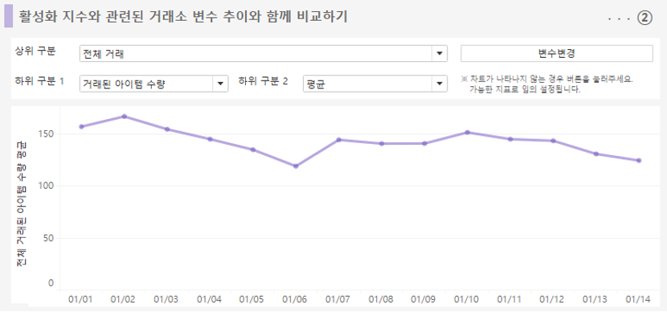
물론 이 지표 하나로 현황에 대한 판단 혹은 정의를 내리기는 어려울 수 있습니다. KPI가 이슈를 감지하기 위한 단초를 제공해주는 것처럼, 이 지수도 많은 변수를 일일이 확인하지 않고서도 대략적인 현황을 빠르게 파악하기 위한 하나의 길잡이 역할로 활용할 수 있다면 좋겠습니다.
마지막으로 위 차트에서는 일자별 비교를 위해 평균 값 하나의 추이만을 확인했는데, 상자그림과 같은 시각화를 활용하여 전체적인 분포를 한번에 비교해볼 수도 있습니다.
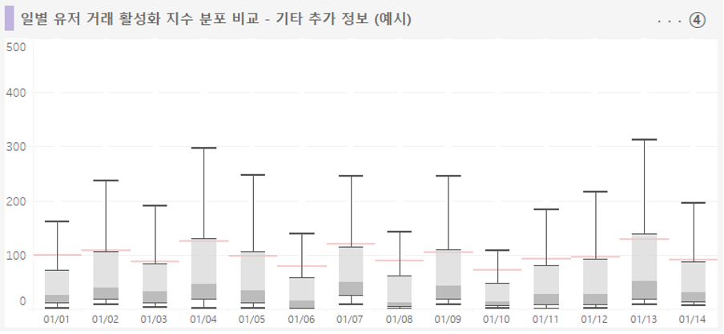
다른 콘텐츠로의 확장
이번 데모 버전의 분석에서는 거래소 시스템에 적용했지만, 지수 개발 목적에서 언급했던 것처럼 여러 변수들을 하나로 압축하여 모니터링하고 싶은 지표가 있다면 동일한 로직을 적용해볼 수 있습니다.
만약 소셜 콘텐츠와 관련된 변수를 하나로 간단히 표현해보고 싶다면 사용할 변수를 선정하고 (다양한 활동 변수들 : 채팅 횟수, 길드 기부, 도움 요청 횟수 등) 이를 하나의 지표인 ‘소셜 콘텐츠 활성화 지수’로 표현하는 것입니다. 더 나아가 다른 핵심 콘텐츠(PVP, PVE, 영웅 등)도 동일한 방식으로 도출한 뒤 적절히 시각화해 준다면 차트 하나로 게임 내 주요 콘테츠의 활성화 정도를 종합적으로 비교해보는 것도 가능할 것입니다.
만약 유사한 형태의 지수를 활용하고자 하는 니즈가 있다면 대상 프로젝트와 사용 목적 등을 함께 논의하여 원하는 형태로 구현 해볼 수 있도록 진행이 가능하니 참고 부탁드립니다.
마케팅 성과 대시보드 개발기
데이터 기반 의사결정의 중요성은 이미 많이 들어보셨을 텐데요, ‘데이터 기반 마케팅’ (혹은 ‘데이터 드리븐 마케팅’)에 대한 관심도를 보면 마케팅 업계 역시 예외는 아닌듯 합니다. ‘데이터 기반 마케팅’에 대한 개념을 간단히 짚고 넘어가자면 마케팅 운영에 필요한 다양한 의사 결정(효율적인 미디어 선택, 타겟을 고려한 크리에이티브 선정 등)에 고객의 인텐트를 이해하기 위한 데이터를 적극적으로 활용하는 방식이라고 할 수 있습니다. 물론 마케팅에 데이터를 활용하는 것은 오래전부터 있었으니 처음 생겨난 개념이라고는 할 수 없으나 그만큼 데이터를 통한 마케팅 운영의 중요성이 강조되면서 최근에서야 정착하게 된 용어가 아닐까 싶습니다. 아마도 그 중요성이 강조된 데에는 의사 결정에 관여한 모든 이들이 가장 쉽게 동의할 수 있는 기반이자 한정된 예산 안에서 최대한의 성과를 끌어낼 수 있는 가장 확실한 방법이기 때문일 것입니다.
이렇듯 중요한 데이터 기반 마케팅이 제대로 실행되기 위해서는 명확한 목표 KPI 설정, 마케터의 데이터 분석 역량, 정확한 성과 측정, 이를 위한 분석 환경 등이 필요합니다. 본 포스팅에서는 정확한 성과 측정과 이를 위한 분석 환경 제공의 관점에서 ‘마케팅 성과 분석 시스템 구축’이라는 큰 틀을 잡고 대시보드를 개발하게 된 과정을 소개하고자 합니다.
R&D 배경
‘마케팅 성과 분석 시스템 구축’을 통해 달성하고자 하는 목표는 현재 마케팅 성과를 확인하고 분석하는데 있어서의 어려운 점을 해결하고 더 나아가 마케팅 데이터와 다양한 인게임 데이터를 활용하여 기존에는 보지 못했던 인사이트를 끌어낼 수 있는 분석 환경을 구축하는 것이었습니다.
목표가 워낙 광범위하고 쉽지 않은 주제인 만큼 한 번에 필요로 하는 모든 것들을 개발할 수는 없기 때문에 단계별로 하나씩 구축해보기로 했습니다. 그리고 그 첫 번째 스텝은 마케팅 성과를 종합적으로 확인할 수 있는 기본 대시보드를 만드는 것이었습니다.
물론 마케팅 성과로 대표되는 ROAS, 전환율 등의 지표를 확인 할 수 있는 공간이 없는 것은 아닙니다. 3rd party tool을 통해 확인할 수는 있으나 일부 집행 국가에 따라 나눠서 확인해야 하거나 접근성의 문제 등으로 과거의 히스토리 및 현황을 빠르고 정확하게 확인하기가 쉽지 않았습니다. 따라서 일반적으로 사용되는 주요 성과 지표들을 집계해보고 이를 서비스 전체로 파악할 수 있도록 기본 대시보드를 구성하고자 했습니다.
R&D 과정
본격적인 대시보드 개발 과정을 살펴보기에 앞서 어떤 순서로 대시보드를 제작했는지 간단히 설명해 드리려 합니다.
- 1) 대시보드의 주제 및 목적에 따라 테스트 분석 진행
- 2) 분석 결과를 토대로 목적별 대시보드 분류 및 세부 기획 (지표 기준, 시각화 방식, 기능 정의 등)
- 3) 대시보드 개발에 필요한 데이터 확인 및 대시보드 개발
- 4) 가이드 작성
1) 의 테스트 분석은 대시보드를 통해 구현하고자 하는 콘텐츠가 실제로 유용한 인사이트를 줄 수 있을지 분석해보는 것입니다. 이 과정에서 데이터 추출, 집계, 인사이트 도출까지의 과정들을 진행하게 되므로 실제 사용자들에게 유용한 정보가 될 수 있을지, 우려되는 문제점은 없는지 등을 확인해볼 수 있습니다. 기본 KPI 모니터링과 같은 루틴한 대시보드의 경우는 이 과정이 굳이 필요 없겠으나 기존과는 다른 새로운 지표를 발굴하거나 새로운 영역의 대시보드를 개발하기 전에는 이런 식의 테스트 분석을 진행하는 것이, 번거로울 순 있지만, 오히려 시행착오를 줄여주는 역할을 해줍니다.
분석 결과에 큰 문제가 없다면 대시보드를 목적에 맞게 분류하고 대시보드 안에서 지표들을 어떻게 보여줄지, 어떤 기능이 필요할지 등을 검토합니다. 세부적인 기획안이 나왔다면 의도에 맞게 개발될 수 있도록 연동되어야 할 데이터 형태를 확인하여 본격적인 개발 작업을 진행합니다. 참고로 3)의 과정은 직접 데이터를 연동하여 간편한 드래그&드롭으로 시각화 구성이 가능한 BI 툴인 태블로를 활용하기로 했습니다
위와 같은 방식으로 대시보드를 제작하면 목적에서 벗어나지 않고 필요로하는 인사이트를 담은 대시보드를 만들 수 있습니다.
본 포스팅은 실제 개발 과정을 담은 일지이기 때문에 아래의 내용도 위와 같은 순서로 전개됩니다.
R&D 과정 상세
첫 번째 과정인 테스트 분석을 위한 설계를 진행하기 전, 먼저 결과를 보여주고자 하는 대상자와 적용하고자 하는 서비스(게임)를 생각해야 합니다. 대상자는 성과를 다룬다는 특성상 경영진과 실무진으로 고려했으며 적용 서비스는 현재 가장 많은 마케팅 예산이 투입되는 에픽세븐으로 설정했습니다.
- 1) 대시보드의 주제 및 목적에 따라 테스트 분석 진행
- 1-1) 분석 설계
우선 마케팅 성과를 종합적으로 확인할 수 있게 하기 위한 대상 지표를 선정했습니다. ROAS, COST, NRU, SALES, 주요 전환율(UU, 1-10 STAGE CLEAR, PU), 마케팅 유입율, 유입 월별 접속/구매 리텐션 등의 지표를 리스트업하고 이를 국가, 마케팅 채널, 유입 유형(자연 유입/마케팅 유입), 유저 타입(신규/복귀/연속) 등 필요한 관점으로 집계될 수 있도록 기획했습니다.
이후 지표의 특성과 목적에 따라 퍼널, 코호트 분석 등 적합한 형태로 보일 수 있도록 설계한 뒤 전체적인 히스토리를 확인하고 전년 동기간 시점의 성과와 비교할 수 있도록 최소 13개월 이상의 기간을 대상 기간으로 정했습니다.
- 1-2) 데이터 정제 및 결과 도출
위 과정에서 설계한 지표들을 집계하기에 앞서 본 분석은 유저의 유입 경로 등의 마케팅 정보를 포함하고 이후의 유저 액션까지 트래킹해야 하므로 마케팅 툴에서 수집되는 로그와 게임 로그를 연동하는 작업이 필요했습니다.
설계된 내용을 기반으로 분석한 결과,
- 유저 타입 및 유입 경로에 따라 주요 성과 지표에 대한 기여도 및 추세가 어떠한지
- 마케팅 집행 규모에 따라 국가별 지표가 얼마나 차이 나며 어떤 특성을 가지는지
- 유입 후 주요 액션에 대한 전환율은 어느 수준이며 이후에도 지속적인 접속 및 구매 전환이 이루어지고 있는지
- 국가별로 고효율의 마케팅 채널은 무엇이며 어떤 KPI를 기준으로 할 경우 어떤 채널이 강점을 가지는지
등을 파악할 수 있었습니다. 이와 같이 인사이트 도출 과정에서 나온 내용이 마케팅 성과를 판단하는데 유용한 정보라고 생각되어 해당 내용을 기반으로 본격적인 대시보드 개발 작업에 착수했습니다.
- 2) 분석 결과를 토대로 목적별 대시보드 분류 및 세부 기획 (지표 기준, 시각화 방식, 기능 정의 등)
앞서 도출된 여러 결과를 흐름에 맞게 묶어보고 어떻게 대시보드를 구성해보면 좋을지 고민했습니다. 일부 대시보드로 활용하기 어려운 내용은 보류하고 유용한 정보들을 토대로 아래와 같이 크게 4개의 대시보드로 분류하게 되었습니다.
- 대시보드 1 : 마케팅 성과 요약
- 전체 혹은 접속 국가별 주요 성과 지표를 요약하여 종합적으로 확인
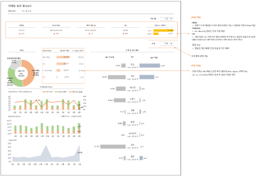
세부 기획이 담긴 구성안
- 대시보드 2 : 국가별 지표 비교
- 대시보드 1에서 확인한 주요 지표를 마케팅 집행 단위인 국가별로 상세히 비교
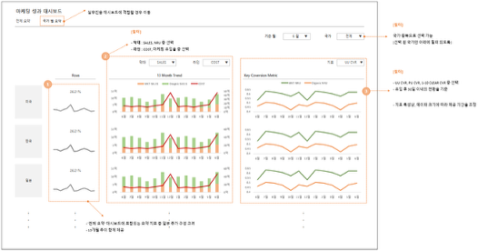
세부 기획이 담긴 구성안
- 대시보드 3 : 유입 코호트 상세
- 월별 유입 코호트를 기준으로 유입 후 플레이 및 구매로의 전환이 지속해서 발생하고 있는지 확인
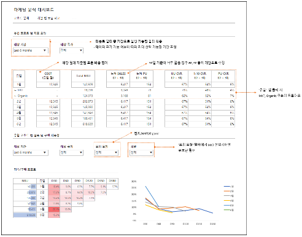
세부 기획이 담긴 구성안
- 대시보드 4 : 마케팅 채널별 지표 비교
- 마케팅 채널별 효율을 다양한 측면에서 확인하고 여러 채널을 동시에 비교/분석
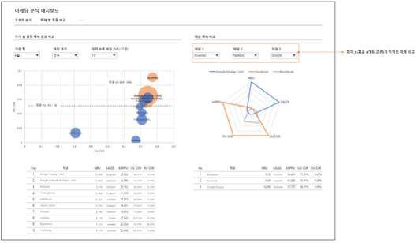
세부 기획이 담긴 구성안
- 3) 대시보드 개발에 필요한 데이터 확인 및 대시보드 개발
작성된 구성안을 토대로 대시보드 개발을 진행했습니다. 의도한 차트가 태블로 상에서 표현 가능한지, 연결될 데이터의 형태는 어떻게 되어야 하는지 등 필요한 내용들이 모두 확인되고 나면 서버를 통해 데이터 테이블을 연결하고 본격적인 작업을 진행합니다.
개발하는 과정에서 이전에는 미처 고려하지 못했던 마이너한 분들도 있기는 했으나 결과적으로 큰 틀은 변경 없이 진행되었습니다. 자세한 대시보드 개발 결과는 2편에 포함될 예정입니다.
마무리
‘마케팅 성과 분석 시스템 구축’이라는 원대한(?) 꿈을 가지고 첫 번째 스텝인 대시보드를 만드는 과정을 소개해드렸습니다. 그간 마케터분들의 요청에 따라 간단한 대시보드를 만들어 비스킷, 제플린 등으로 제공했던 경우는 있었지만 이번처럼 마케팅 운영 전반에 초점을 두고 개발을 진행해 본 적은 처음이었습니다.
때문에 대시보드 기획 단계에서 마케팅 운영 자체에 대한 이해도를 가져야 했다거나 혹은 데이터 정제 단계에서 다르게 수집되는 마케팅 로그와 게임 로그를 연동할 때 마케팅 로그에는 포함되지 않지만 게임 로그에는 존재하는 유저가 다수 발견되는 정합성 이슈가 발생하는 등의 어려운 부분들이 있었습니다.
이런 부분들을 완벽히 해결할 수는 없었으나 최대한 개선하기 위해 많은 자료를 참고하기도 했고, 정합성 이슈의 경우 매칭되지 않는 유저를 별도의 그룹으로 분류하여 진행하는 등 최대한 유입되는 유저들을 고려할 수 있도록 했습니다. 물론 정합성에 대한 내용은 향후 해결해야 할 과제로 남겨두고 지속적인 해결 방안을 찾을 예정입니다.
1차 개발 이후에도 아직 폴리싱할 부분들이 많고 두 번째, 세 번째 단계들이 남아있지만 그럼에도 기존에 확인하기 번거로웠던 성과 지표들을 서비스 전체로 통합하여 한 번에 모니터링할 수 있고 마케팅 트래킹 툴이나 이전의 대시보드에서는 확인할 수 없었던 지표들을 추가로 볼 수 있다는 점에서 유의미한 성과로 이어질 수 있지 않을까 기대하고 있습니다.
다음 2편에서는 가이드에 해당하는 내용을 포함하여, 개발이 완료된 대시보드와 함께 어떻게 활용할 수 있을지 소개하도록 하겠습니다.
마케팅 성과 대시보드 활용하기
지난 포스팅에서 마케팅 성과 분석 대시보드의 개발 과정에 대해 설명했습니다. 이번 포스팅에서는 개발된 대시보드 결과와 각 대시보드를 통해 어떤 것들을 알 수 있는지 소개하고자 합니다.
0. 대시보드 이용 공통사항
- 로우데이터의 수집 환경상 D-2일을 기준으로 데이터 확인이 가능하므로 전일이 아닌 전전 일자까지의 데이터를 포함합니다. 예를 들면 11월 15일(오늘)에 기준 월을 11월로 선택한다면 분석 대상 날짜 범위는 11/1~11/13 입니다.
- 유저 집계 기준은 STOVE_MEMBER_NO를 기준으로 합니다. 따라서 BISKIT 분석 센터에서 제공하는 지표와 다를 수 있습니다.
- 비용 지표는 3rd party tool을 통해 수집된 데이터를 활용할 예정이나 파일럿 서비스에서는 사업 부서의 정기 리포트를 통해 확인한 값을 사용했습니다.
1. 마케팅 성과 요약 대시보드
전체 혹은 접속 국가별 주요 성과 지표를 요약하여 종합적으로 확인하기 위한 대시보드입니다. 마케팅 성과를 판단하기 위해 쓰이는 주요 지표들을 포함하였으며 요약형 대시보드인 만큼 선택할 수 있는 기능들을 늘리기보다는 주요 정보들을 간소화하여 전달할 수 있도록 구성했습니다. 마케팅 예산 수립이 보통 월 단위로 이루어지고 접속 국가 단위로 집행되므로 기준 월과 접속 국가 필터를 전역 필터로 설정했습니다. 전역 필터는 대시보드 최상단에 배치되어 아래에 위치한 모든 차트를 컨트롤합니다.
1.1 할 수 있는 질문
- 지난 1년간 마케팅 성과는 나아지고 있는 추세인가요?
- 지난 달 유입된 신규 유저들의 플레이 혹은 결제로의 전환이 제대로 이루어지고 있나요?
- 신규 유저들의 매출액 중 마케팅을 통해 유입된 유저들의 매출액 비중은 어느 수준이며 그 추이는 어떻게 변하고 있나요?
- 마케팅 집행 국가 중 마케팅을 통해 발생한 신규 유저 유입과 매출액이 가장 큰 국가는 어디인가요?
1.2 대시보드를 통해 알 수 있는 것
- 성과 지표 요약
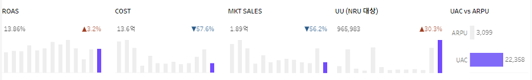
기본이 되는 성과 지표인 ROAS, COST, MKT SALES, UU (NRU 대상), UAC, ARPU를 확인하고 과거 13개월 추이를 간단히 비교할 수 있습니다. 전월 대비 증감 수준도 함께 확인할 수 있습니다.
- 유입 유형 범위에 따른 NRU 규모와 주요 전환율 살펴보기
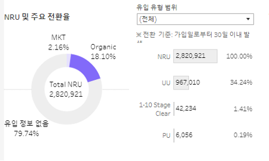
기준 월의 NRU 규모 및 유입 유형에 따른 비중을 알 수 있습니다. ‘유입 유형 범위’ 필터에서 선택한 그룹만 비중과 전환율을 집계하는 모수에 포함됩니다. 일반적으로 유입 유형은 ‘마케팅 유입(MKT)’과 ‘자연 유입(Organic)’으로 나누어지는데, 데이터 연동 과정에서 유입 정보가 매칭되지 않은 유저들은 ‘유입 정보 없음’ 그룹으로 지정했습니다. 유입 경로가 확실하게 확인된 유저만을 대상으로 지표를 보려면 우측 상단의 유입 유형 범위 필터에서 해당 그룹을 제외할 수 있습니다. 주요 전환율은 최초 유입일 이후 30일 이내의 전환 여부로 측정합니다.
- 마케팅 비용과 유입 수준을 추이로 비교하기
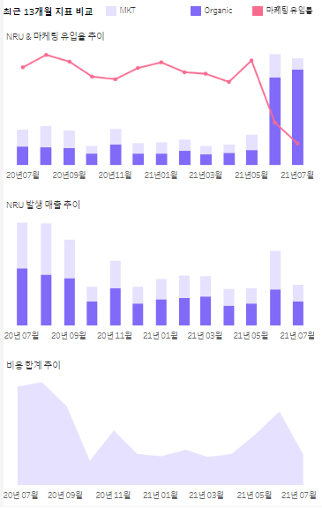
3가지 내용의 추이 차트를 한 번에 비교할 수 있으며 기준 월로부터 이전 13개월의 추이를 보여줍니다. 상단의 ‘유입 유형 범위’ 필터에 따라 모수가 선택되고 (1.1.3와 동일) 선택된 유입 유형이 범례로 표시됩니다. NRU 중 마케팅으로 유입된 유저의 비중 변화와 월별 NRU 매출 중 마케팅 유입 유저가 발생시킨 매출액의 비중 변화를 하단의 마케팅 비용의 증감과 비교해볼 수 있습니다.
- 마케팅으로 유입된 유저의 영향도를 국가별로 비교하기
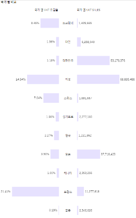
마케팅이 집행된 국가를 대상으로 마케팅을 통해 유입된 NRU 및 비중(=마케팅 유입률)과 이들의 매출액을 비교할 수 있습니다. 전체 NRU가 큰 국가의 경우 상대적으로 마케팅 유입율이 낮게 집계되므로 마케팅 유입률(=마케팅 NRU/전체 NRU)과 NRU 규모를 함께 확인할 수 있도록 구현 했습니다
2. 국가별 지표 비교 대시보드
마케팅 성과 요약 대시보드에서 확인한 성과 지표를 국가별로 상세히 비교하기 위해 기획한 대시보드입니다. 국가별 성과를 비교하는 것이 목표라면 본 대시보드를 활용할 수 있습니다. 전역 필터인 기준 월, 국가, 유입 유형 범위 필터를 통해 모수를 설정합니다.
2.1 할 수 있는 질문
- 최근 마케팅 유입률이 가장 크게 집계된 한국, 미국, 일본의 매출 및 NRU 유입 규모 추세는 어떠한가요?
- 신규 유입 후 플레이 및 구매로의 전환이 잘 이루어지지 않는 국가는 어느 곳이며 이전의 전환 수준은 어땠나요?
- 당월 미국의 마케팅 유입 유저 PU 전환율이 낮은데 최근 전환율 추이는 어땠으며 자연 유입 유저의 전환율과 비교 시에는 어떤 경향성이 있나요?
2.2 대시보드를 통해 알 수 있는 것
- 국가별 ROAS 비교하기
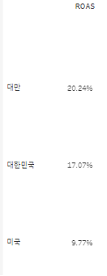
전역 필터에서 선택한 국가들을 대상으로 기준월의 ROAS를 비교합니다
- 국가별 주요 지표 추이 비교하기
SALES, NRU와 COST, 마케팅 유입률을 각각 막대와 라인으로 설정하여 동일한 차트상에서 비교할 수 있습니다. 마케팅 SALES vs COST 혹은 NRU vs 마케팅 유입률 등의 비교가 가능합니다. SALES는 각 월별 신규 유저의 매출을 의미하며, 선택된 막대 차트의 범례는 상단의 ‘유입 유형 범위’ 필터에서 선택된 그룹으로 표시됩니다.
- 국가별 주요 전환율 비교하기
NRU를 대상으로 UU, 모험 1-10 STAGE CLEAR, PU 전환율 추이를 확인할 수 있습니다. 전환율 은 유입일로부터 30일 이내 전환을 기준으로 집계됩니다. 상단의 ‘유입 유형 범위’ 필터에서 선택된 그룹이 범례로 표시되어 마케팅 유입과 자연 유입 그룹 간의 비교가 가능합니다. 좌측 ‘주요 지표 추이’ 차트의 지표는 높게 유지되고 있지만 전환율은 지속적으로 하락하는 국가는 없는지, 특정 시점의 문제인지 등을 파악할 수 있습니다.
3. 유입 코호트 상세 대시보드
월별 NRU를 기준으로 유입 후 플레이 및 구매로의 전환이 지속해서 발생하고 있는지 확인하기 위한 목적의 대시보드입니다. 유입 초반의 전환율 뿐만 아니라 유입 후 30, 60, … 180일 까지의 전환율 확인을 통해 장기적인 관점의 정착 수준도 확인할 수 있습니다. 상단에서 설정한 기준 월로부터 이전 6개월 간의 지표 확인이 가능하며 ‘마케팅 집행 여부’ 필터 설정에 따라 ‘국가’ 필터에서 선택 가능한 국가의 범위가 달라집니다.
* 코호트 분석이란? 특정 기간에 특정의 경험을 공유한 집단간의 행동패턴을 비교/분석하는 방법
3.1 할 수 있는 질문
- 최근 신규 유저의 접속 리텐션에서 일반적인 경향성이 계속 유지되고 있는가?
- 가입 후 30일 이상 경과한 시점의 구매 전환율은 얼마나 되는가?
- 최근 유입된 코호트 중 가입 후 경과일 60~90일 사이의 구매 전환율이 가장 높은 코호트는 언제인가?
3.2 대시보드를 통해 알 수 있는 것
- 코호트 별 유입 초반 전환율 지표 요약
코호트별 유입 후 30일 이내의 UU, 모험 1-10 STAGE CLEAR, PU 전환율을 마케팅 비용, 전환 유저 수와 함께 확인할 수 있도록 요약하여 데이터 테이블 형태로 제공합니다. 날짜를 클릭하면 유입 유형 그룹으로 구분한 수치도 확인할 수 있습니다.
- 코호트 별 접속과 구매 리텐션 비교하기
접속과 구매 리텐션 지표에 대한 코호트 분석이 가능합니다. 유입 후 30일 단위로 접속과 구매 여부를 확인하여 집계하며 180일 까지 확인할 수 있습니다. 10월 기준 D60의 구매 리텐션 수치는 10월의 NRU를 기준으로 유입 후 30~60일 동안 구매한 유저의 비중을 의미합니다. 추가로 우측의 라인 차트를 통해 동기간 리텐션 수치를 코호트별로 비교할 수 있습니다. D90 시점의 접속 리텐션이 가장 높은 코호트는 어느 월의 코호트인지에 대한 비교를 의미합니다.
4.마케팅 채널별 지표 비교 대시보드
마케팅 채널별 효율을 여러 지표로 확인하고 비교/분석하기 위한 대시보드입니다. 수 많은 마케팅 채널 중 고효율의 채널을 선별하기 위해서 한 두 가지의 지표만 활용하는 경우도 있지만, 때에 따라 여러 지표를 고려해야 할 때도 있습니다. 본 대시보드에서는 직접 선택한 성과 지표를 기준으로 국가별 상위 마케팅 채널을 확인하고 특정 채널을 대상으로 종합적인 비교가 가능하도록 시각화 했습니다.
4.1 할 수 있는 질문
- 10월 미국에서 신규 유입이 가장 많았던 상위 3개 채널은 무엇인가요?
- 9월 한국의 마케팅 목표 KPI 기준이 SALES, PU CVR 이라면 어떤 채널이 가장 고효율의 채널이라고 볼 수 있나요?
4.2 대시보드를 통해 알 수 있는 것
- NRU 상위 10개 채널의 주요 성과에 따른 분포 비교하기
선택한 월과 국가를 기준으로 NRU 상위 10개 채널을 필터링한 후, X축과 Y축으로 설정한 성과 지표를 기준으로 채널별 분포를 확인합니다. 각 축에서 선택할 수 있는 지표는 UU CVR, PU CVR, 1-10 CVR, SALES, ARPPU 다섯 가지입니다. 원하는 지표 선택을 통해 목표로 하는 성과에 부합하는 채널은 무엇인지 비교해볼 수 있습니다. 구체적인 수치는 하단의 데이터 테이블을 통해 확인할 수 있습니다.
- 특정 마케팅 채널을 대상으로 성과 지표 한번에 비교하기
좌측의 차트에서 확인한 10개의 채널 중 비교해보고자 하는 채널을 선택할 수 있습니다. 위 다섯가지 성과 지표를 종합적으로 고려하여 비교하기 위함입니다. 예를 들면 PU와 UU 전환율 지표는 유사한 두 채널이 다른 성과 지표에서는 얼마나 차이나는지 확인 가능합니다. 선택 채널의 개수 제한은 없으나 시각화 특성 상 2~3개의 채널 선택을 권장합니다.
마치며
이상으로 개발된 대시보드의 결과와 할 수 있는 질문들, 그리고 각 대시보드를 통해 어떤 것들을 알 수 있는지 살펴보았습니다. 소개해드린 대시보드를 통해 마케팅 운영에 필요한 궁금증을 해결하는 것과 더불어, 특이점이 있다면 더 들여다봐야 할 주제에는 어떤 것들이 있을지 추가적인 질문을 끌어낼 수 있는 도구의 역할을 할 수 있기를 바랍니다.